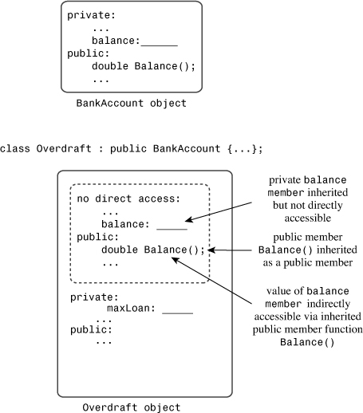
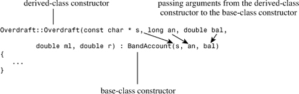
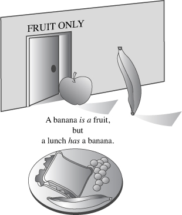
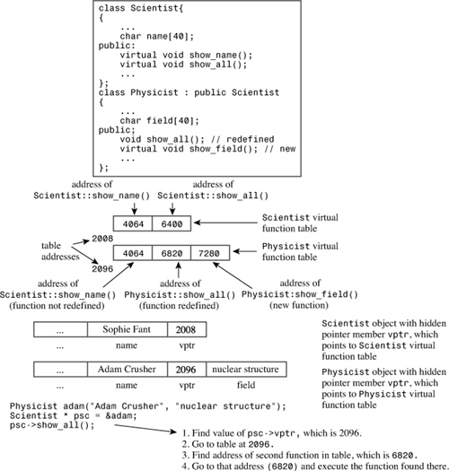
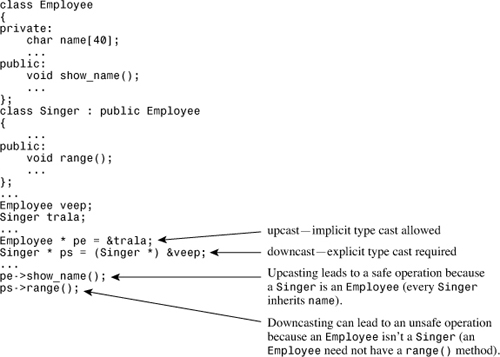
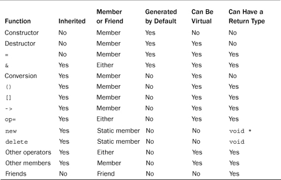

In this chapter you’ll learn about the following:
• Inheritance as an is-a relationship
• How to publicly derive one class from another
• Protected access
• Constructor member initializer lists
• Upcasting and downcasting
• Virtual member functions
• Early (static) binding and late (dynamic) binding
• Abstract base classes
• Pure virtual functions
• When and how to use public inheritance
One of the main goals of object-oriented programming is to provide reusable code. When you develop a new project, particularly if the project is large, it’s nice to be able to reuse proven code rather than to reinvent it. Employing old code saves time and because it has already been used and tested, can help suppress the introduction of bugs into a program. Also the less you have to concern yourself with details, the better you can concentrate on overall program strategy.
Traditional C function libraries provide reusability through predefined, precompiled functions, such as strlen() and rand(), that you can use in your programs. Many vendors furnish specialized C libraries that provide functions beyond those of the standard C library. For example, you can purchase libraries of database management functions and of screen control functions. However, function libraries have a limitation: Unless the vendor supplies the source code for its library functions (and often it doesn’t), you can’t extend or modify the functions to meet your particular needs. Instead, you have to shape your program to meet the workings of the library. Even if the vendor does supply the source code, you run the risk of unintentionally modifying how part of a function works or of altering the relationships among library functions as you add your changes.
C++ classes bring a higher level of reusability. Many vendors now offer class libraries, which consist of class declarations and implementations. Because a class combines data representation with class methods, it provides a more integrated package than does a function library. A single class, for example, may provide all the resources for managing a dialog box. Often class libraries are available in source code, which means you can modify them to meet your needs. But C++ has a better method than code modification for extending and modifying classes. This method, called class inheritance, lets you derive new classes from old ones, with the derived class inheriting the properties, including the methods, of the old class, called a base class. Just as inheriting a fortune is usually easier than earning one from scratch, deriving a class through inheritance is usually easier than designing a new one. Here are some things you can do with inheritance:
• You can add functionality to an existing class. For example, given a basic array class, you could add arithmetic operations.
• You can add to the data that a class represents. For example, given a basic string class, you could derive a class that adds a data member representing a color to be used when displaying the string.
• You can modify how a class method behaves. For example, given a Passenger class that represents the services provided to an airline passenger, you can derive a FirstClassPassenger class that provides a higher level of services.
Of course, you could accomplish the same aims by duplicating the original class code and modifying it, but the inheritance mechanism allows you to proceed by just providing the new features. You don’t even need access to the source code to derive a class. Thus, if you purchase a class library that provides only the header files and the compiled code for class methods, you can still derive new classes based on the library classes. Conversely, you can distribute your own classes to others, keeping parts of your implementation secret, yet still giving your clients the option of adding features to your classes.
Inheritance is a splendid concept, and its basic implementation is quite simple. But managing inheritance so that it works properly in all situations requires some adjustments. This chapter looks at both the simple and the subtle aspects of inheritance.
When one class inherits from another, the original class is called a base class, and the inheriting class is called a derived class. So to illustrate inheritance, let’s begin with a base class. The Webtown Social Club has decided to keep track of its members who play table tennis. As head programmer for the club, you have designed the simple TableTennisPlayer class defined in Listings 13.1 and 13.2.
// tabtenn0.h -- a table-tennis base class
#ifndef TABTENN0_H_
#define TABTENN0_H_
#include <string>
using std::string;
// simple base class
class TableTennisPlayer
{
private:
string firstname;
string lastname;
bool hasTable;
public:
TableTennisPlayer (const string & fn = "none",
const string & ln = "none", bool ht = false);
void Name() const;
bool HasTable() const { return hasTable; };
void ResetTable(bool v) { hasTable = v; };
};
#endif
//tabtenn0.cpp -- simple base-class methods
#include "tabtenn0.h"
#include <iostream>
TableTennisPlayer::TableTennisPlayer (const string & fn,
const string & ln, bool ht) : firstname(fn),
lastname(ln), hasTable(ht) {}
void TableTennisPlayer::Name() const
{
std::cout << lastname << ", " << firstname;
}
All the TableTennisPlayer class does is keep track of the players’ names and whether they have tables. There are a couple of points to notice. First, the class uses the standard string class to hold the names. This is more convenient, flexible, and safer than using a character array. And it is rather more professional than the String class of Chapter 12, “Classes and Dynamic Memory Allocation.” Second, the constructor uses the member initializer list syntax introduced in Chapter 12. You could also do this:
TableTennisPlayer::TableTennisPlayer (const string & fn,
const string & ln, bool ht)
{
firstname = fn;
lastname = ln;
hasTable = ht;
}
However, this approach has the effect of first calling the default string constructor for firstname and then invoking the string assignment operator to reset firstname to fn. But the member initializer list syntax saves a step by just using the string copy constructor to initialize firstname to fn.
Listing 13.3 shows this modest class in action.
// usett0.cpp -- using a base class
#include <iostream>
#include "tabtenn0.h"
int main ( void )
{
using std::cout;
TableTennisPlayer player1("Chuck", "Blizzard", true);
TableTennisPlayer player2("Tara", "Boomdea", false);
player1.Name();
if (player1.HasTable())
cout << ": has a table.\n";
else
cout << ": hasn't a table.\n";
player2.Name();
if (player2.HasTable())
cout << ": has a table";
else
cout << ": hasn't a table.\n";
return 0;
}
And here’s the output of the program in Listings 13.1, 13.2, and 13.3:
Blizzard, Chuck: has a table.
Boomdea, Tara: hasn't a table.
Note that the program uses constructors with C-style string arguments:
TableTennisPlayer player1("Chuck", "Blizzard", true);
TableTennisPlayer player2("Tara", "Boomdea", false);
But the formal parameters for the constructor were declared as type const string &. This is a type mismatch, but the string class, much like the String class of Chapter 12, has a constructor with a const char * parameter, and that constructor is used automatically to create a string object initialized by the C-style string. In short, you can use either a string object or a C-style string as an argument to the TableTennisPlayer constructor. The first invokes a string constructor with a const string & parameter, and the second invokes a string constructor with a const char * parameter.
Some members of the Webtown Social Club have played in local table tennis tournaments, and they demand a class that includes the point ratings they’ve earned through their play. Rather than start from scratch, you can derive a class from the TableTennisPlayer class. The first step is to have the RatedPlayer class declaration show that it derives from the TableTennisPlayer class:
// RatedPlayer derives from the TableTennisPlayer base class
class RatedPlayer : public TableTennisPlayer
{
...
};
The colon indicates that the RatedPlayer class is based on the TableTennisPlayer class. This particular heading indicates that TableTennisPlayer is a public base class; this is termed public derivation. An object of a derived class incorporates a base class object. With public derivation, the public members of the base class become public members of the derived class. The private portions of a base class become part of the derived class, but they can be accessed only through public and protected methods of the base class. (We’ll get to protected members in a bit.)
What does this accomplish? If you declare a RatedPlayer object, it has the following special properties:
• An object of the derived type has stored within it the data members of the base type. (The derived class inherits the base-class implementation.)
• An object of the derived type can use the methods of the base type. (The derived class inherits the base-class interface.)
Thus, a RatedPlayer object can store the first name and last name of each player and whether the player has a table. Also a RatedPlayer object can use the Name(), HasTable(), and ResetTable() methods from the TableTennisPlayer class (see Figure 13.1 for another example).
Figure 13.1. Base-class and derived-class objects.

What needs to be added to these inherited features?
• A derived class needs its own constructors.
• A derived class can add additional data members and member functions as needed.
In this particular case, the class needs one more data member to hold the ratings value. It should also have a method for retrieving the rating and a method for resetting the rating. So the class declaration could look like this:
// simple derived class
class RatedPlayer : public TableTennisPlayer
{
private:
unsigned int rating; // add a data member
public:
RatedPlayer (unsigned int r = 0, const string & fn = "none",
const string & ln = "none", bool ht = false);
RatedPlayer(unsigned int r, const TableTennisPlayer & tp);
unsigned int Rating() const { return rating; } // add a method
void ResetRating (unsigned int r) {rating = r;} // add a method
};
The constructors have to provide data for the new members, if any, and for the inherited members. The first RatedPlayer constructor uses a separate formal parameter for each member, and the second RatedPlayer constructor uses a TableTennisPlayer parameter, which bundles three items (firstname, lastname, and hasTable) into a single unit.
A derived class does not have direct access to the private members of the base class; it has to work through the base-class methods. For example, the RatedPlayer constructors cannot directly set the inherited members (firstname, lastname, and hasTable). Instead, they have to use public base-class methods to access private base-class members. In particular, the derived-class constructors have to use the base-class constructors.
When a program constructs a derived-class object, it first constructs the base-class object. Conceptually, that means the base-class object should be constructed before the program enters the body of the derived-class constructor. C++ uses the member initializer list syntax to accomplish this. Here, for instance, is the code for the first RatedPlayer constructor:
RatedPlayer::RatedPlayer(unsigned int r, const string & fn,
const string & ln, bool ht) : TableTennisPlayer(fn, ln, ht)
{
rating = r;
}
The following part is the member initializer list:
: TableTennisPlayer(fn, ln, ht)
It’s executable code, and it calls the TableTennisPlayer constructor. Suppose, for example, a program has the following declaration:
RatedPlayer rplayer1(1140, "Mallory", "Duck", true);
The RatedPlayer constructor assigns the actual arguments "Mallory", "Duck", and true to the formal parameters fn, ln, and ht. It then passes these parameters on as actual arguments to the TableTennisPlayer constructor. This constructor, in turn, creates the embedded TableTennisPlayer object and stores the data "Mallory", "Duck", and true in it. Then the program enters the body of the RatedPlayer constructor, completes the construction of the RatedPlayer object, and assigns the value of the parameter r (that is, 1140) to the rating member (see Figure 13.2 for another example).
Figure 13.2. Passing arguments through to a base-class constructor.

What if you omit the member initializer list?
RatedPlayer::RatedPlayer(unsigned int r, const string & fn,
const string & ln, bool ht) // what if no initializer list?
{
rating = r;
}
The base-class object must be created first, so if you omit calling a base-class constructor, the program uses the default base-class constructor. Therefore, the previous code is the same as the following:
RatedPlayer::RatedPlayer(unsigned int r, const string & fn,
const string & ln, bool ht) // : TableTennisPlayer()
{
rating = r;
}
Unless you want the default constructor to be used, you should explicitly provide the correct base-class constructor call.
Now let’s look at code for the second constructor:
RatedPlayer::RatedPlayer(unsigned int r, const TableTennisPlayer & tp)
: TableTennisPlayer(tp)
{
rating = r;
}
Again, the TableTennisPlayer information is passed on to a TableTennisPlayer constructor:
TableTennisPlayer(tp)
Because tp is type const TableTennisPlayer &, this call invokes the base-class copy constructor. The base class didn’t define a copy constructor, but recall from Chapter 12 that the compiler automatically generates a copy constructor if one is needed and you haven’t defined one already. In this case, the implicit copy constructor, which does memberwise copying, is fine because the class doesn’t directly use dynamic memory allocation. (The string members do use dynamic memory allocation, but, recall, memberwise copying will use the string class copy constructors to copy the string members.)
You may, if you like, also use member initializer list syntax for members of the derived class. In this case, you use the member name instead of the class name in the list. Thus, the second constructor can also be written in this manner:
// alternative version
RatedPlayer::RatedPlayer(unsigned int r, const TableTennisPlayer & tp)
: TableTennisPlayer(tp), rating(r)
{
}
These are the key points about constructors for derived classes:
• The base-class object is constructed first.
• The derived-class constructor should pass base-class information to a base-class constructor via a member initializer list.
• The derived-class constructor should initialize the data members that were added to the derived class.
This example doesn’t provide explicit destructors, so the implicit destructors are used. Destroying an object occurs in the opposite order used to construct an object. That is, the body of the derived-class destructor is executed first, and then the base-class destructor is called automatically.
When creating an object of a derived class, a program first calls the base-class constructor and then calls the derived-class constructor. The base-class constructor is responsible for initializing the inherited data members. The derived-class constructor is responsible for initializing any added data members. A derived-class constructor always calls a base-class constructor. You can use the initializer list syntax to indicate which base-class constructor to use. Otherwise, the default base-class constructor is used.
When an object of a derived class expires, the program first calls the derived-class destructor and then calls the base-class destructor.
To use a derived class, a program needs access to the base-class declarations. Listing 13.4 places both class declarations in the same header file. You could give each class its own header file, but because the two classes are related, it makes more organizational sense to keep the class declarations together.
// tabtenn1.h -- a table-tennis base class
#ifndef TABTENN1_H_
#define TABTENN1_H_
#include <string>
using std::string;
// simple base class
class TableTennisPlayer
{
private:
string firstname;
string lastname;
bool hasTable;
public:
TableTennisPlayer (const string & fn = "none",
const string & ln = "none", bool ht = false);
void Name() const;
bool HasTable() const { return hasTable; };
void ResetTable(bool v) { hasTable = v; };
};
// simple derived class
class RatedPlayer : public TableTennisPlayer
{
private:
unsigned int rating;
public:
RatedPlayer (unsigned int r = 0, const string & fn = "none",
const string & ln = "none", bool ht = false);
RatedPlayer(unsigned int r, const TableTennisPlayer & tp);
unsigned int Rating() const { return rating; }
void ResetRating (unsigned int r) {rating = r;}
};
#endif
Listing 13.5 provides the method definitions for both classes. Again, you could use separate files, but it’s simpler to keep the definitions together.
//tabtenn1.cpp -- simple base-class methods
#include "tabtenn1.h"
#include <iostream>
TableTennisPlayer::TableTennisPlayer (const string & fn,
const string & ln, bool ht) : firstname(fn),
lastname(ln), hasTable(ht) {}
void TableTennisPlayer::Name() const
{
std::cout << lastname << ", " << firstname;
}
// RatedPlayer methods
RatedPlayer::RatedPlayer(unsigned int r, const string & fn,
const string & ln, bool ht) : TableTennisPlayer(fn, ln, ht)
{
rating = r;
}
RatedPlayer::RatedPlayer(unsigned int r, const TableTennisPlayer & tp)
: TableTennisPlayer(tp), rating(r)
{
}
Listing 13.6 creates objects of both the TableTennisPlayer class and the RatedPlayer class. Notice that objects of both classes can use the TableTennisPlayer class Name() and HasTable() methods.
// usett1.cpp -- using base class and derived class
#include <iostream>
#include "tabtenn1.h"
int main ( void )
{
using std::cout;
using std::endl;
TableTennisPlayer player1("Tara", "Boomdea", false);
RatedPlayer rplayer1(1140, "Mallory", "Duck", true);
rplayer1.Name(); // derived object uses base method
if (rplayer1.HasTable())
cout << ": has a table.\n";
else
cout << ": hasn't a table.\n";
player1.Name(); // base object uses base method
if (player1.HasTable())
cout << ": has a table";
else
cout << ": hasn't a table.\n";
cout << "Name: ";
rplayer1.Name();
cout << "; Rating: " << rplayer1.Rating() << endl;
// initialize RatedPlayer using TableTennisPlayer object
RatedPlayer rplayer2(1212, player1);
cout << "Name: ";
rplayer2.Name();
cout << "; Rating: " << rplayer2.Rating() << endl;
return 0;
}
Here is the output of the program in Listings 13.4, 13.5, and 13.6:
Duck, Mallory: has a table.
Boomdea, Tara: hasn't a table.
Name: Duck, Mallory; Rating: 1140
Name: Boomdea, Tara; Rating: 1212
A derived class has some special relationships with the base class. One, which you’ve just seen, is that a derived-class object can use base-class methods, provided that the methods are not private:
RatedPlayer rplayer1(1140, "Mallory", "Duck", true);
rplayer1.Name(); // derived object uses base method
Two other important relationships are that a base-class pointer can point to a derived-class object without an explicit type cast and that a base-class reference can refer to a derived-class object without an explicit type cast:
RatedPlayer rplayer1(1140, "Mallory", "Duck", true);
TableTennisPlayer & rt = rplayer;
TableTennisPlayer * pt = &rplayer;
rt.Name(); // invoke Name() with reference
pt->Name(); // invoke Name() with pointer
However, a base-class pointer or reference can invoke just base-class methods, so you couldn’t use rt or pt to invoke, say, the derived-class ResetRanking() method.
Ordinarily, C++ requires that references and pointer types match the assigned types, but this rule is relaxed for inheritance. However, the rule relaxation is just in one direction. You can’t assign base-class objects and addresses to derived-class references and pointers:
TableTennisPlayer player("Betsy", "Bloop", true);
RatedPlayer & rr = player; // NOT ALLOWED
RatedPlayer * pr = player; // NOT ALLOWED
Both these sets of rules make sense. For example, consider the implications of having a base-class reference refer to a derived object. In this case, you can use the base-class reference to invoke base-class methods for the derived-class object. Because the derived class inherits the base-class methods and data members, this causes no problems. Now consider what would happen if you could assign a base-class object to a derived-class reference. The derived-class reference would be able to invoke derived-class methods for the base object, and that could cause problems. For example, applying the RatedPlayer::Rating() method to a TableTennisPlayer object makes no sense because the TableTennisPlayer object doesn’t have a rating member.
The fact that base-class references and pointers can refer to derived-class objects has some interesting consequences. One is that functions defined with base-class reference or pointer arguments can be used with either base-class or derived-class objects. For instance, consider this function:
void Show(const TableTennisPlayer & rt)
{
using std::cout;
cout << "Name: ";
rt.Name();
cout << "\nTable: ";
if (rt.HasTable())
cout << "yes\n";
else
cout << "no\n";
}
The formal parameter rt is a reference to a base class, so it can refer to a base-class object or to a derived-class object. Thus, you can use Show() with either a TableTennis argument or a RatedPlayer argument:
TableTennisPlayer player1("Tara", "Boomdea", false);
RatedPlayer rplayer1(1140, "Mallory", "Duck", true);
Show(player1); // works with TableTennisPlayer argument
Show(rplayer1); // works with RatedPlayer argument
A similar relationship would hold for a function with a pointer-to-base-class formal parameter; it could be used with either the address of a base-class object or the address of a derived-class object as an actual argument:
void Wohs(const TableTennisPlayer * pt); // function with pointer parameter
...
TableTennisPlayer player1("Tara", "Boomdea", false);
RatedPlayer rplayer1(1140, "Mallory", "Duck", true);
Wohs(&player1); // works with TableTennisPlayer * argument
Wohs(&rplayer1); // works with RatedPlayer * argument
The reference compatibility property also allows you to initialize a base-class object to a derived-class object, although somewhat indirectly. Suppose you have this code:
RatedPlayer olaf1(1840, "Olaf", "Loaf", true);
TableTennisPlayer olaf2(olaf1);
The exact match for initializing olaf2 would be a constructor with this prototype:
TableTennisPlayer(const RatedPlayer &); // doesn't exist
The class definitions don’t include this constructor, but there is the implicit copy constructor:
// implicit copy constructor
TableTennisPlayer(const TableTennisPlayer &);
The formal parameter is a reference to the base type, so it can refer to a derived type. Thus, the attempt to initialize olaf2 to olaf1 uses this constructor, which copies the firstname, lastname, and hasTable members. In other words, it initializes olaf2 to the TableTennisPlayer object embedded in the RatedPlayer object olaf1.
Similarly, you can assign a derived-class object to a base-class object:
RatedPlayer olaf1(1840, "Olaf", "Loaf", true);
TableTennisPlayer winner;
winner = olaf1; // assign derived to base object
In this case, the program uses the implicit overloaded assignment operator:
TableTennisPlayer & operator=(const TableTennisPlayer &) const;
Again, a base-class reference refers to a derived-class object, and just the base-class portion of olaf1 is copied to winner.
The special relationship between a derived class and a base class is based on an underlying model for C++ inheritance. Actually, C++ has three varieties of inheritance: public, protected, and private. Public inheritance is the most common form, and it models an is-a relationship. This is shorthand for saying that an object of a derived class should also be an object of the base class. Anything you do with a base-class object, you should be able to do with a derived-class object. Suppose, for example, that you have a Fruit class. It could store, say, the weight and caloric content of a fruit. Because a banana is a particular kind of fruit, you could derive a Banana class from the Fruit class. The new class would inherit all the data members of the original class, so a Banana object would have members representing the weight and caloric content of a banana. The new Banana class also might add members that apply particularly to bananas and not to fruit in general, such as the Banana Institute Peel Index. Because the derived class can add features, it’s probably more accurate to describe the relationship as an is-a-kind-of relationship, but is-a is the usual term.
To clarify is-a relationships, let’s look at some examples that don’t match that model. Public inheritance doesn’t model a has-a relationship. A lunch, for example, might contain a fruit. But a lunch, in general, is not a fruit. Therefore, you should not derive a Lunch class from the Fruit class in an attempt to place fruit in a lunch. The correct way to handle putting fruit into a lunch is to consider the matter as a has-a relationship: A lunch has a fruit. As you’ll see in Chapter 14, that’s most easily modeled by including a Fruit object as a data member of a Lunch class (see Figure 13.3).
Figure 13.3. Is-a and has-a relationships.

Public inheritance doesn’t model an is-like-a relationship—that is, it doesn’t do similes. It’s often pointed out that lawyers are like sharks. But it is not literally true that a lawyer is a shark. For example, sharks can live underwater. Therefore, you shouldn’t derive a Lawyer class from a Shark class. Inheritance can add properties to a base class; it doesn’t remove properties from a base class. In some cases, shared characteristics can be handled by designing a class encompassing those characteristics and then using that class, either in an is-a or has-a relationship, to define the related classes.
Public inheritance doesn’t model an is-implemented-as-a relationship. For example, you could implement a stack by using an array. However, it wouldn’t be proper to derive a Stack class from an Array class. A stack is not an array. For example, array indexing is not a stack property. Also a stack could be implemented in some other way, such as by using a linked list. A proper approach would be to hide the array implementation by giving the stack a private Array object member.
Public inheritance doesn’t model a uses-a relationship. For example, a computer can use a laser printer, but it doesn’t make sense to derive a Printer class from a Computer class, or vice versa. You might, however, devise friend functions or classes to handle communication between Printer objects and Computer objects.
Nothing in the C++ language prevents you from using public inheritance to model has-a, is-implemented-as-a, or uses-a relationships. However, doing so usually leads to programming problems. So let’s stick to the is-a relationships.
The RatedPlayer example of inheritance is a simple one. Objects of the derived class use the base-class methods without change. But you can encounter situations in which you want a method to behave differently for the derived class than it does for the base class. That is, the way a particular method behaves may depend on the object that invokes it. This more sophisticated behavior is termed polymorphic (“having many forms”) because you can have multiple behaviors for a method, depending on the context. There are two key mechanisms for implementing polymorphic public inheritance:
• Redefining base-class methods in a derived class
• Using virtual methods
It’s time for another example. You have leveraged your experience with the Webtown Social Club to become head programmer for the Pontoon National Bank. The first thing the bank asks you to do is develop two classes. One class will represent its basic checking plan, the Brass Account, and the second class will represent the Brass Plus checking account, which adds an overdraft protection feature. That is, if a user writes a check larger (but not too much larger) than his or her balance, the bank will cover the check, charging the user for the excess payment and adding a surcharge. You can characterize the two accounts in terms of data to be stored and operations to be allowed.
First, here is the information for a Brass Account checking plan:
• Client name
• Account number
• Current balance
And here are the operations to be represented:
• Creating an account
• Depositing money into the account
• Withdrawing money from the account
• Displaying the account information
For the Brass Plus Account checking plan, the Pontoon National Bank wants all the features of the Brass Account as well as the following additional items of information:
• An upper limit to the overdraft protection
• An interest rate charged for overdraft loans
• The overdraft amount currently owed to the bank
No additional operations are needed, but two operations need to be implemented differently:
• The withdrawing money operation has to incorporate overdraft protection for the Brass Plus Account
• The display operation has to show the additional information required by the Brass Plus Account
Suppose you call one class Brass and the second class BrassPlus. Should you derive BrassPlus publicly from Brass? To answer this question, first answer another: Does the BrassPlus class meet the is-a test? Sure. Everything that is true of a Brass object will be true for a BrassPlus object. Both store a client name, an account number, and a balance. With both, you can make deposits and withdrawals and display account information. Note that the is-a relationship is not, in general, symmetric. A fruit, in general, is not a banana; similarly, a Brass object won’t have all the capabilities of a BrassPlus object.
Brass and BrassPlus ClassesThe Brass Account class information is pretty straightforward, but the bank hasn’t told you enough details about how the overdraft system works. In response to your request for further information, the friendly Pontoon National Bank representative tells you the following:
• A Brass Plus Account limits how much money the bank will lend you to cover overdrafts. The default value is $500, but some customers may start with a different limit.
• The bank may change a customer’s overdraft limit.
• A Brass Plus Account charges interest on the loan. The default value is 11.125%, but some customers may start with a different rate.
• The bank may change a customer’s interest rate.
• The account keeps track of how much the customer owes the bank (overdraft loans plus interest). The user cannot pay off this amount through a regular deposit or through a transfer from another account. Instead, he or she must pay in cash to a special bank officer, who will, if necessary, seek out the customer. When the debt is paid, the account can reset the amount owed to 0.
The last feature is an unusual way for a bank to do business, but it has the fortunate side effect of keeping the programming problem simpler.
This list suggests that the new class needs constructors that provide account information and that include a debt limit with a default value of $500 and an interest rate with a default value of 10%. Also there should be methods for resetting the debt limit, interest rate, and current debt. These are all things to be added to the Brass class, and they will be declared in the BrassPlus class declaration.
The information about the two classes suggests class declarations like those in Listing 13.7.
// brass.h -- bank account classes
#ifndef BRASS_H_
#define BRASS_H_
#include <string>
// Brass Account Class
class Brass
{
private:
std::string fullName;
long acctNum;
double balance;
public:
Brass(const std::string & s = "Nullbody", long an = -1,
double bal = 0.0);
void Deposit(double amt);
virtual void Withdraw(double amt);
double Balance() const;
virtual void ViewAcct() const;
virtual ~Brass() {}
};
//Brass Plus Account Class
class BrassPlus : public Brass
{
private:
double maxLoan;
double rate;
double owesBank;
public:
BrassPlus(const std::string & s = "Nullbody", long an = -1,
double bal = 0.0, double ml = 500,
double r = 0.11125);
BrassPlus(const Brass & ba, double ml = 500,
double r = 0.11125);
virtual void ViewAcct()const;
virtual void Withdraw(double amt);
void ResetMax(double m) { maxLoan = m; }
void ResetRate(double r) { rate = r; };
void ResetOwes() { owesBank = 0; }
};
#endif
There are several points to notice in Listing 13.7:
• The BrassPlus class adds three new private data members and three new public member functions to the Brass class.
• Both the Brass class and the BrassPlus class declare the ViewAcct() and Withdraw() methods; these are the methods that will behave differently for a BrassPlus object than they do with a Brass object.
• The Brass class uses the new keyword virtual in declaring ViewAcct() and Withdraw(). These methods are now termed virtual methods.
• The Brass class also declares a virtual destructor, even though the destructor does nothing.
The first point in the list is nothing new. The RatedPlayer class did something similar when it added a new data member and two new methods to the TableTennisPlayer class.
The second point in the list is how the declarations specify that methods are to behave differently for the derived class. The two ViewAcct() prototypes indicate that there will be two separate method definitions. The qualified name for the base-class version is Brass::ViewAcct(), and the qualified name for the derived-class version is BrassPlus::ViewAcct(). A program will use the object type to determine which version to use:
Brass dom("Dominic Banker", 11224, 4183.45);
BrassPlus dot("Dorothy Banker", 12118, 2592.00);
dom.ViewAcct(); // use Brass::ViewAcct()
dot.ViewAcct(); // use BrassPlus::ViewAcct()
Similarly, there will be two versions of Withdraw(): one that’s used by Brass objects and one that’s used by BrassPlus objects. Methods that behave the same for both classes, such as Deposit() and Balance(), are declared only in the base class.
The third point (the use of virtual) is more involved than the first two points. It determines which method is used if the method is invoked by a reference or a pointer instead of by an object. If you don’t use the keyword virtual, the program chooses a method based on the reference type or pointer type. If you do use the keyword virtual, the program chooses a method based on the type of object the reference or pointer refers to. Here is how a program behaves if ViewAcct() is not virtual:
// behavior with non-virtual ViewAcct()
// method chosen according to reference type
Brass dom("Dominic Banker", 11224, 4183.45);
BrassPlus dot("Dorothy Banker", 12118, 2592.00);
Brass & b1_ref = dom;
Brass & b2_ref = dot;
b1_ref.ViewAcct(); // use Brass::ViewAcct()
b2_ref.ViewAcct(); // use Brass::ViewAcct()
The reference variables are type Brass, so Brass::ViewAccount() is chosen. Using pointers to Brass instead of references results in similar behavior.
In contrast, here is the behavior if ViewAcct() is virtual:
// behavior with virtual ViewAcct()
// method chosen according to object type
Brass dom("Dominic Banker", 11224, 4183.45);
BrassPlus dot("Dorothy Banker", 12118, 2592.00);
Brass & b1_ref = dom;
Brass & b2_ref = dot;
b1_ref.ViewAcct(); // use Brass::ViewAcct()
b2_ref.ViewAcct(); // use BrassPlus::ViewAcct()
In this case, both references are type Brass, but b2_ref refers to a BrassPlus object, so BrassPlus::ViewAcct() is used for it. Using pointers to Brass instead of references results in similar behavior.
It turns out, as you’ll see in a bit, that this behavior of virtual functions is very handy. Therefore, it is the common practice to declare as virtual in the base class those methods that might be redefined in a derived class. When a method is declared virtual in a base class, it is automatically virtual in the derived class, but it is a good idea to document which functions are virtual by using the keyword virtual in the derived class declarations, too.
The fourth point is that the base class declares a virtual destructor. This is to make sure that the correct sequence of destructors is called when a derived object is destroyed. We’ll discuss this point in more detail later in this chapter.
If you redefine a base-class method in a derived class, the usual practice is to declare the base-class method as virtual. This makes the program choose the method version based on object type instead of the type of a reference or pointer. It’s also the usual practice to declare a virtual destructor for the base class.
The next step is to prepare the class implementation. Part of this has been done already by the inline function definitions in the header file. Listing 13.8 provides the remaining method definitions. Note that the keyword virtual is used just in the method prototypes in the class declaration, not in the method definitions in Listing 13.8.
// brass.cpp -- bank account class methods
#include <iostream>
#include "brass.h"
using std::cout;
using std::endl;
using std::string;
// formatting stuff
typedef std::ios_base::fmtflags format;
typedef std::streamsize precis;
format setFormat();
void restore(format f, precis p);
// Brass methods
Brass::Brass(const string & s, long an, double bal)
{
fullName = s;
acctNum = an;
balance = bal;
}
void Brass::Deposit(double amt)
{
if (amt < 0)
cout << "Negative deposit not allowed; "
<< "deposit is cancelled.\n";
else
balance += amt;
}
void Brass::Withdraw(double amt)
{
// set up ###.## format
format initialState = setFormat();
precis prec = cout.precision(2);
if (amt < 0)
cout << "Withdrawal amount must be positive; "
<< "withdrawal canceled.\n";
else if (amt <= balance)
balance -= amt;
else
cout << "Withdrawal amount of $" << amt
<< " exceeds your balance.\n"
<< "Withdrawal canceled.\n";
restore(initialState, prec);
}
double Brass::Balance() const
{
return balance;
}
void Brass::ViewAcct() const
{
// set up ###.## format
format initialState = setFormat();
precis prec = cout.precision(2);
cout << "Client: " << fullName << endl;
cout << "Account Number: " << acctNum << endl;
cout << "Balance: $" << balance << endl;
restore(initialState, prec); // restore original format
}
// BrassPlus Methods
BrassPlus::BrassPlus(const string & s, long an, double bal,
double ml, double r) : Brass(s, an, bal)
{
maxLoan = ml;
owesBank = 0.0;
rate = r;
}
BrassPlus::BrassPlus(const Brass & ba, double ml, double r)
: Brass(ba) // uses implicit copy constructor
{
maxLoan = ml;
owesBank = 0.0;
rate = r;
}
// redefine how ViewAcct() works
void BrassPlus::ViewAcct() const
{
// set up ###.## format
format initialState = setFormat();
precis prec = cout.precision(2);
Brass::ViewAcct(); // display base portion
cout << "Maximum loan: $" << maxLoan << endl;
cout << "Owed to bank: $" << owesBank << endl;
cout.precision(3); // ###.### format
cout << "Loan Rate: " << 100 * rate << "%\n";
restore(initialState, prec);
}
// redefine how Withdraw() works
void BrassPlus::Withdraw(double amt)
{
// set up ###.## format
format initialState = setFormat();
precis prec = cout.precision(2);
double bal = Balance();
if (amt <= bal)
Brass::Withdraw(amt);
else if ( amt <= bal + maxLoan - owesBank)
{
double advance = amt - bal;
owesBank += advance * (1.0 + rate);
cout << "Bank advance: $" << advance << endl;
cout << "Finance charge: $" << advance * rate << endl;
Deposit(advance);
Brass::Withdraw(amt);
}
else
cout << "Credit limit exceeded. Transaction cancelled.\n";
restore(initialState, prec);
}
format setFormat()
{
// set up ###.## format
return cout.setf(std::ios_base::fixed,
std::ios_base::floatfield);
}
void restore(format f, precis p)
{
cout.setf(f, std::ios_base::floatfield);
cout.precision(p);
}
Before looking at details of Listing 13.8, such as handling of formatting in some of the methods, let’s examine the aspects that relate directly to inheritance. Keep in mind that the derived class does not have direct access to private base-class data; the derived class has to use base-class public methods to access that data. The means of access depends on the method. Constructors use one technique, and other member functions use a different technique.
The technique that derived-class constructors use to initialize base-class private data is the member initializer list syntax. The RatedPlayer class constructors use that technique, and so do the BrassPlus constructors:
BrassPlus::BrassPlus(const string & s, long an, double bal,
double ml, double r) : Brass(s, an, bal)
{
maxLoan = ml;
owesBank = 0.0;
rate = r;
}
BrassPlus::BrassPlus(const Brass & ba, double ml, double r)
: Brass(ba) // uses implicit copy constructor
{
maxLoan = ml;
owesBank = 0.0;
rate = r;
}
Each of these constructors uses the member initializer list syntax to pass base-class information to a base-class constructor and then uses the constructor body to initialize the new data items added by the BrassPlus class.
Non-constructors can’t use the member initializer list syntax. But a derived-class method can call a public base-class method. For instance, ignoring the formatting aspect, the core of the BrassPlus version of ViewAcct() is this:
// redefine how ViewAcct() works
void BrassPlus::ViewAcct() const
{
...
Brass::ViewAcct(); // display base portion
cout << "Maximum loan: $" << maxLoan << endl;
cout << "Owed to bank: $" << owesBank << endl;
cout << "Loan Rate: " << 100 * rate << "%\n";
...
}
In other words, BrassPlus::ViewAcct() displays the added BrassPlus data members and calls on the base-class method Brass::ViewAcct() to display the base-class data members. Using the scope-resolution operator in a derived-class method to invoke a base-class method is a standard technique.
It’s vital that the code use the scope-resolution operator. Suppose that, instead, you wrote the code this way:
// redefine erroneously how ViewAcct() works
void BrassPlus::ViewAcct() const
{
...
ViewAcct(); // oops! recursive call
...
}
If the code doesn’t use the scope-resolution operator, the compiler assumes that ViewAcct() is BrassPlus::ViewAcct(), and this creates a recursive function that has no termination—not a good thing.
Next, consider the BrassPlus::Withdraw() method. If the client withdraws an amount larger than the balance, the method should arrange for a loan. It can use Brass::Withdraw() to access the balance member, but Brass::Withdraw() issues an error message if the withdrawal amount exceeds the balance. This implementation avoids the message by using the Deposit() method to make the loan and then calling Brass::Withdraw() when sufficient funds are available:
// redefine how Withdraw() works
void BrassPlus::Withdraw(double amt)
{
...
double bal = Balance();
if (amt <= bal)
Brass::Withdraw(amt);
else if ( amt <= bal + maxLoan - owesBank)
{
double advance = amt - bal;
owesBank += advance * (1.0 + rate);
cout << "Bank advance: $" << advance << endl;
cout << "Finance charge: $" << advance * rate << endl;
Deposit(advance);
Brass::Withdraw(amt);
}
else
cout << "Credit limit exceeded. Transaction cancelled.\n";
...
}
Note that the method uses the base-class Balance() function to determine the original balance. The code doesn’t have to use the scope-resolution operator for Balance() because this method has not been redefined in the derived class.
The ViewAcct() and the Withdraw() methods use the setf() and precision() formatting methods to set the output mode for floating-point values to fixed-point, two places to the right of the decimal. When these modes are set, output stays in that mode, so the polite thing for these methods to do is to reset the formatting mode to its state prior to calling the methods. Listings 8.8 and 10.5 use similar approaches. To avoid some code duplication, the program moves some of the formatting actions to helper functions:
// formatting stuff
typedef std::ios_base::fmtflags format;
typedef std::streamsize precis;
format setFormat();
void restore(format f, precis p);
The setFormat() function sets fixed-point notation and returns the previous flag setting:
format setFormat()
{
// set up ###.## format
return cout.setf(std::ios_base::fixed,
std::ios_base::floatfield);
}
And the restore() function resets the format and the precision:
void restore(format f, precis p)
{
cout.setf(f, std::ios_base::floatfield);
cout.precision(p);
}
You can find more details about formatting in Chapter 17, “Input, Output, and Files.”
Brass and BrassPlus ClassesListing 13.9 shows the class definitions with a Brass object and a BrassPlus object.
// usebrass1.cpp -- testing bank account classes
// compile with brass.cpp
#include <iostream>
#include "brass.h"
int main()
{
using std::cout;
using std::endl;
Brass Piggy("Porcelot Pigg", 381299, 4000.00);
BrassPlus Hoggy("Horatio Hogg", 382288, 3000.00);
Piggy.ViewAcct();
cout << endl;
Hoggy.ViewAcct();
cout << endl;
cout << "Depositing $1000 into the Hogg Account:\n";
Hoggy.Deposit(1000.00);
cout << "New balance: $" << Hoggy.Balance() << endl;
cout << "Withdrawing $4200 from the Pigg Account:\n";
Piggy.Withdraw(4200.00);
cout << "Pigg account balance: $" << Piggy.Balance() << endl;
cout << "Withdrawing $4200 from the Hogg Account:\n";
Hoggy.Withdraw(4200.00);
Hoggy.ViewAcct();
return 0;
}
In the following output of the program in Listing 13.9, note that Hogg gets overdraft protection and Pigg does not:
Client: Porcelot Pigg
Account Number: 381299
Balance: $4000.00
Client: Horatio Hogg
Account Number: 382288
Balance: $3000.00
Maximum loan: $500.00
Owed to bank: $0.00
Loan Rate: 11.125%
Depositing $1000 into the Hogg Account:
New balance: $4000
Withdrawing $4200 from the Pigg Account:
Withdrawal amount of $4200.00 exceeds your balance.
Withdrawal canceled.
Pigg account balance: $4000
Withdrawing $4200 from the Hogg Account:
Bank advance: $200.00
Finance charge: $22.25
Client: Horatio Hogg
Account Number: 382288
Balance: $0.00
Maximum loan: $500.00
Owed to bank: $222.25
Loan Rate: 11.125%
In Listing 13.9 the methods are invoked by objects, not pointers or references, so this program doesn’t use the virtual method feature. Let’s look at an example for which the virtual methods do come into play. Suppose you would like to manage a mixture of Brass and BrassPlus accounts. It would be nice if you could have a single array that holds a mixture of Brass and BrassPlus objects, but that’s not possible. Every item in an array has to be of the same type, and Brass and BrassPlus are two separate types. However, you can create an array of pointers-to-Brass. In that case, every element is of the same type, but because of the public inheritance model, a pointer-to-Brass can point to either a Brass or a BrassPlus object. Thus, in effect, you have a way of representing a collection of more than one type of object with a single array. This is polymorphism, and Listing 13.10 shows a simple example.
// usebrass2.cpp -- polymorphic example
// compile with brass.cpp
#include <iostream>
#include <string>
#include "brass.h"
const int CLIENTS = 4;
int main()
{
using std::cin;
using std::cout;
using std::endl;
Brass * p_clients[CLIENTS];
std::string temp;
long tempnum;
double tempbal;
char kind;
for (int i = 0; i < CLIENTS; i++)
{
cout << "Enter client's name: ";
getline(cin,temp);
cout << "Enter client's account number: ";
cin >> tempnum;
cout << "Enter opening balance: $";
cin >> tempbal;
cout << "Enter 1 for Brass Account or "
<< "2 for BrassPlus Account: ";
while (cin >> kind && (kind != '1' && kind != '2'))
cout <<"Enter either 1 or 2: ";
if (kind == '1')
p_clients[i] = new Brass(temp, tempnum, tempbal);
else
{
double tmax, trate;
cout << "Enter the overdraft limit: $";
cin >> tmax;
cout << "Enter the interest rate "
<< "as a decimal fraction: ";
cin >> trate;
p_clients[i] = new BrassPlus(temp, tempnum, tempbal,
tmax, trate);
}
while (cin.get() != '\n')
continue;
}
cout << endl;
for (int i = 0; i < CLIENTS; i++)
{
p_clients[i]->ViewAcct();
cout << endl;
}
for (int i = 0; i < CLIENTS; i++)
{
delete p_clients[i]; // free memory
}
cout << "Done.\n";
return 0;
}
The program in Listing 13.10 lets user input determine the type of account to be added and then uses new to create and initialize an object of the proper type. You may recall that getline(cin,temp) reads a line of input from cin and stores it in the string object temp.
Here is a sample run of the program in Listing 13.10:
Enter client's name: Harry Fishsong
Enter client's account number: 112233
Enter opening balance: $1500
Enter 1 for Brass Account or 2 for BrassPlus Account: 1
Enter client's name: Dinah Otternoe
Enter client's account number: 121213
Enter opening balance: $1800
Enter 1 for Brass Account or 2 for BrassPlus Account: 2
Enter the overdraft limit: $350
Enter the interest rate as a decimal fraction: 0.12
Enter client's name: Brenda Birdherd
Enter client's account number: 212118
Enter opening balance: $5200
Enter 1 for Brass Account or 2 for BrassPlus Account: 2
Enter the overdraft limit: $800
Enter the interest rate as a decimal fraction: 0.10
Enter client's name: Tim Turtletop
Enter client's account number: 233255
Enter opening balance: $688
Enter 1 for Brass Account or 2 for BrassPlus Account: 1
Client: Harry Fishsong
Account Number: 112233
Balance: $1500.00
Client: Dinah Otternoe
Account Number: 121213
Balance: $1800.00
Maximum loan: $350.00
Owed to bank: $0.00
Loan Rate: 12.00%
Client: Brenda Birdherd
Account Number: 212118
Balance: $5200.00
Maximum loan: $800.00
Owed to bank: $0.00
Loan Rate: 10.00%
Client: Tim Turtletop
Account Number: 233255
Balance: $688.00
Done.
The polymorphic aspect is provided by the following code:
for (i = 0; i < CLIENTS; i++)
{
p_clients[i]->ViewAcct();
cout << endl;
}
If the array member points to a Brass object, Brass::ViewAcct() is invoked; if the array member points to a BrassPlus object, BrassPlus::ViewAcct() is invoked. If Brass::ViewAcct() were been declared as virtual, Brass:ViewAcct() would be invoked in all cases.
The code in Listing 13.10 that uses delete to free the objects allocated by new illustrates why the base class should have a virtual destructor, even if no destructor appears to be needed. If the destructors are not virtual, then just the destructor corresponding to the pointer type is called. In Listing 13.10, this means that only the Brass destructor would be called, even if the pointer pointed to a BrassPlus object. If the destructors are virtual, the destructor corresponding to the object type is called. So if a pointer points to a BrassPlus object, the BrassPlus destructor is called. And when a BrassPlus destructor finishes, it automatically calls the base-class constructor. Thus, using virtual destructors ensures that the correct sequence of destructors is called. In Listing 13.10, this correct behavior isn’t essential because the destructors do nothing. But if, say, BrassPlus had a do-something destructor, it would be vital for Brass to have a virtual destructor, even if it did nothing.
Which block of executable code gets used when a program calls a function? The compiler has the responsibility of answering this question. Interpreting a function call in the source code as executing a particular block of function code is termed binding the function name. With C, the task is simple because each function name corresponds to a distinct function. With C++, the task is more complex because of function overloading. The compiler has to look at the function arguments as well as the function name to figure out which function to use. Nonetheless, this kind of binding is a task a C or C++ compiler could perform during the compiling process; binding that takes place during compilation is called static binding (or early binding). However, virtual functions make the job more difficult yet. As shown in Listing 13.10, the decision of which function to use can’t be made at compile time because the compiler doesn’t know which kind of object the user is going to choose to make. Therefore, the compiler has to generate code that allows the correct virtual method to be selected as the program runs; this is called dynamic binding (or late binding).
Now that you’ve seen virtual methods at work, let’s look at this process in greater depth, beginning with how C++ handles pointer and reference type compatibility.
Dynamic binding in C++ is associated with methods invoked by pointers and references, and this is governed, in part, by the inheritance process. One way public inheritance models the is-a relationship is in how it handles pointers and references to objects. Normally, C++ does not allow you to assign an address of one type to a pointer of another type. Nor does it let a reference to one type refer to another type:
double x = 2.5;
int * pi = &x; // invalid assignment, mismatched pointer types
long & rl = x; // invalid assignment, mismatched reference type
However, as you’ve seen, a reference or a pointer to a base class can refer to a derived-class object without using an explicit type cast. For example, the following initializations are allowed:
BrassPlus dilly ("Annie Dill", 493222, 2000);
Brass * pb = &dilly; // ok
Brass & rb = dilly; // ok
Converting a derived-class reference or pointer to a base-class reference or pointer is called upcasting, and it is always allowed for public inheritance without the need for an explicit type cast. This rule is part of expressing the is-a relationship. A BrassPlus object is a Brass object in that it inherits all the data members and member functions of a Brass object. Therefore, anything that you can do to a Brass object, you can do to a BrassPlus object. So a function designed to handle a Brass reference can, without fear of creating problems, perform the same acts on a BrassPlus object. The same idea applies if you pass a pointer to an object as a function argument. Upcasting is transitive. That is, if you derive a BrassPlusPlus class from BrassPlus, then a Brass pointer or reference can refer to a Brass object, a BrassPlus object, or a BrassPlusPlus object.
The opposite process, converting a base-class pointer or reference to a derived-class pointer or reference, is called downcasting, and it is not allowed without an explicit type cast. The reason for this restriction is that the is-a relationship is not, in general, symmetric. A derived class could add new data members, and the class member functions that used these data members wouldn’t apply to the base class. For example, suppose you derive a Singer class from an Employee class, adding a data member representing a singer’s vocal range and a member function, called range(), that reports the value for the vocal range. It wouldn’t make sense to apply the range() method to an Employee object. But if implicit downcasting were allowed, you could accidentally set a pointer-to-Singer to the address of an Employee object and use the pointer to invoke the range() method (see Figure 13.4).
Upcasting also takes place for function calls with base-class references or pointers as parameters. Consider the following code fragment, and suppose each function calls upon the virtual method ViewAcct():
void fr(Brass & rb); // uses rb.ViewAcct()
void fp(Brass * pb); // uses pb->ViewAcct()
void fv(Brass b); // uses b.ViewAcct()
int main()
{
Brass b("Billy Bee", 123432, 10000.0);
BrassPlus bp("Betty Beep", 232313, 12345.0);
fr(b); // uses Brass::ViewAcct()
fr(bp); // uses BrassPlus::ViewAcct()
fp(b); // uses Brass::ViewAcct()
fp(bp); // uses BrassPlus::ViewAcct()
fv(b); // uses Brass::ViewAcct()
fv(bp); // uses Brass::ViewAcct()
...
}
Passing by value causes only the Brass component of a BrassPlus object to be passed to the fv() function. But the implicit upcasting that occurs with references and pointers causes the fr() and fp() functions to use Brass::ViewAcct() for Brass objects and BrassPlus::ViewAcct() for BrassPlus objects.
Implicit upcasting makes it possible for a base-class pointer or reference to refer to either a base-class object or a derived-class object, and that produces the need for dynamic binding. Virtual member functions are the C++ answer to that need.
Let’s revisit the process of invoking a method with a reference or pointer. Consider the following code:
BrassPlus ophelia; // derived-class object
Brass * bp; // base-class pointer
bp = &ophelia; // Brass pointer to BrassPlus object
bp->ViewAcct(); // which version?
As discussed before, if ViewAcct() is not declared as virtual in the base class, bp->ViewAcct() goes by the pointer type (Brass *) and invokes Brass::ViewAcct(). The pointer type is known at compile time, so the compiler can bind ViewAcct() to Brass::ViewAcct() at compile time. In short, the compiler uses static binding for nonvirtual methods.
But if ViewAcct() is declared as virtual in the base class, bp->ViewAcct() goes by the object type (BrassPlus) and invokes BrassPlus::ViewAcct(). In this example, you can see that the object type is BrassPlus, but, in general, (as in Listing 13.10) the object type might only be determined when the program is running. Therefore, the compiler generates code that binds ViewAcct() to Brass::ViewAcct() or BrassPlus::ViewAcct(), depending on the object type, while the program executes. In short, the compiler uses dynamic binding for virtual methods.
In most cases, dynamic binding is a good thing because it allows a program to choose the method designed for a particular type. Given this fact, you might be wondering about the following:
• Why have two kinds of binding?
• If dynamic binding is so good, why isn’t it the default?
• How does it work?
We’ll look at answers to these questions next.
If dynamic binding allows you to redefine class methods but static binding makes a partial botch of it, why have static binding at all? There are two reasons: efficiency and a conceptual model.
First, let’s consider efficiency. For a program to be able to make a runtime decision, it has to have some way to keep track of what sort of object a base-class pointer or reference refers to, and that entails some extra processing overhead. (You’ll see one method of dynamic binding later.) If, for example, you design a class that won’t be used as a base class for inheritance, you don’t need dynamic binding. Similarly, if you have a derived class, such as the RatedPlayer example, that does not redefine any methods, you don’t need dynamic binding. In these cases, it makes sense to use static binding and gain a little efficiency. The fact that static binding is more efficient is the reason it is the default choice for C++. Stroustrup says that one of the guiding principles of C++ is that you shouldn’t have to pay (in memory usage or processing time) for features you don’t use. You should therefore go to virtual functions only if the program design needs them.
Next, let’s consider the conceptual model. When you design a class, you may have member functions that you don’t want redefined in derived classes. For example, the Brass::Balance() function, which returns the account balance, seems like a function that shouldn’t be redefined. By making this function nonvirtual, you accomplish two things. First, you make it more efficient. Second, you announce that it is your intention that this function not be redefined. That suggests reserving the virtual label just for methods you expect to be redefined.
If a method in a base class will be redefined in a derived class, you should make it virtual. If the method should not be redefined, you should make it nonvirtual.
Of course, when you design a class, it’s not always obvious into which category a method falls. Like many aspects of real life, class design is not a linear process.
C++ specifies how virtual functions should behave, but it leaves the implementation up to the compiler writer. You don’t need to know the implementation method to use virtual functions, but seeing how it is done may help you understand the concepts better, so let’s take a look.
The usual way compilers handle virtual functions is to add a hidden member to each object. The hidden member holds a pointer to an array of function addresses. Such an array is usually termed a virtual function table (vtbl). The vtbl holds the addresses of the virtual functions declared for objects of that class. For example, an object of a base class contains a pointer to a table of addresses of all the virtual functions for that class. An object of a derived class contains a pointer to a separate table of addresses. If the derived class provides a new definition of a virtual function, the vtbl holds the address of the new function. If the derived class doesn’t redefine the virtual function, the vtbl holds the address of the original version of the function. If the derived class defines a new function and makes it virtual, its address is added to the vtbl (see Figure 13.5). Note that whether you define 1 or 10 virtual functions for a class, you add just one address member to an object; it’s the table size that varies.
Figure 13.5. A virtual function mechanism.

When you call a virtual function, the program looks at the vtbl address stored in an object and goes to the corresponding table of function addresses. If you use the first virtual function defined in the class declaration, the program uses the first function address in the array and executes the function that has that address. If you use the third virtual function in the class declaration, the program uses the function whose address is in the third element of the array.
In short, using virtual functions has the following modest costs in memory and execution speed:
• Each object has its size increased by the amount needed to hold an address.
• For each class, the compiler creates a table (an array) of addresses of virtual functions.
• For each function call, there’s an extra step of going to a table to look up an address.
Keep in mind that although nonvirtual functions are slightly more efficient than virtual functions, they don’t provide dynamic binding.
We’ve already discussed the main points about virtual methods:
• Beginning a class method declaration with the keyword virtual in a base class makes the function virtual for the base class and all classes derived from the base class, including classes derived from the derived classes, and so on.
• If a virtual method is invoked by using a reference to an object or by using a pointer to an object, the program uses the method defined for the object type rather than the method defined for the reference or pointer type. This is called dynamic, or late, binding. This behavior is important because it’s always valid for a base-class pointer or reference to refer to an object of a derived type.
• If you’re defining a class that will be used as a base class for inheritance, you should declare as virtual functions the class methods that may have to be redefined in derived classes.
There are several other things you may need to know about virtual methods, some of which have been mentioned in passing already. Let’s look at them next.
Constructors can’t be virtual. Creating a derived object invokes a derived-class constructor, not a base-class constructor. The derived-class constructor then uses a base-class constructor, but this sequence is distinct from the inheritance mechanism. Thus, a derived class doesn’t inherit the base-class constructors, so usually there’s not much point to making them virtual, anyway.
Destructors should be virtual unless a class isn’t to be used as a base class. For example, suppose Employee is a base class and Singer is a derived class that adds a char * member that points to memory allocated by new. Then, when a Singer object expires, it’s vital that the ~Singer() destructor be called to free that memory.
Now consider the following code:
Employee * pe = new Singer; // legal because Employee is base for Singer
...
delete pe; // ~Employee() or ~Singer()?
If the default static binding applies, the delete statement invokes the ~Employee() destructor. This frees memory pointed to by the Employee components of the Singer object but not memory pointed to by the new class members. However, if the destructors are virtual, the same code invokes the ~Singer() destructor, which frees memory pointed to by the Singer component, and then calls the ~Employee() destructor to free memory pointed to by the Employee component.
Note that this implies that even if a base class doesn’t require the services of an explicit destructor, you shouldn’t rely on the default constructor. Instead, you should provide a virtual destructor, even if it has nothing to do:
virtual ~BaseClass() { }
By the way, it’s not an error for a class to have a virtual destructor even if it is not intended to be a base class; it’s just a matter of efficiency.
Normally, you should provide a base class with a virtual destructor even if the class doesn’t need a destructor.
Friends can’t be virtual functions because friends are not class members, and only members can be virtual functions. If this poses a problem for a design, you might be able to sidestep it by having the friend function use virtual member functions internally.
If a derived class fails to redefine a function (virtual or not), the class will use the base class version of the function. If a derived class is part of a long chain of derivations, it will use the most recently defined version of the function. The exception is if the base versions are hidden, as described next.
Suppose you create something like the following:
class Dwelling
{
public:
virtual void showperks(int a) const;
...
};
class Hovel : public Dwelling
{
public:
virtual void showperks() const;
...
};
This causes a problem. You might get a compiler warning similar to the following:
Warning: Hovel::showperks(void) hides Dwelling::showperks(int)
Or perhaps you won’t get a warning. Either way, the code has the following implications:
Hovel trump;
trump.showperks(); // valid
trump.showperks(5); // invalid
The new definition defines a showperks() function that takes no arguments. Rather than resulting in two overloaded versions of the function, this redefinition hides the base class version that takes an int argument. In short, redefining inherited methods is not a variation of overloading. If you redefine a function in a derived class, it doesn’t just override the base class declaration with the same function signature. Instead, it hides all base-class methods of the same name, regardless of the argument signatures.
This fact of life leads to a couple rules of thumb. First, if you redefine an inherited method, you need to make sure you match the original prototype exactly. One relatively new exception to this rule is that a return type that is a reference or pointer to a base class can be replaced by a reference or pointer to the derived class. This feature is termed covariance of return type because the return type is allowed to vary in parallel with the class type:
class Dwelling
{
public:
// a base method
virtual Dwelling & build(int n);
...
};
class Hovel : public Dwelling
{
public:
// a derived method with a covariant return type
virtual Hovel & build(int n); // same function signature
...
};
Note that this exception applies only to return values, not to arguments.
Second, if the base class declaration is overloaded, you need to redefine all the base-class versions in the derived class:
class Dwelling
{
public:
// three overloaded showperks()
virtual void showperks(int a) const;
virtual void showperks(double x) const;
virtual void showperks() const;
...
};
class Hovel : public Dwelling
{
public:
// three redefined showperks()
virtual void showperks(int a) const;
virtual void showperks(double x) const;
virtual void showperks() const;
...
};
If you redefine just one version, the other two become hidden and cannot be used by objects of the derived class. Note that if no change is needed, the redefinition can simply call the base-class version:
void Hovel::showperks() const {Dwelling::showperks();}
protectedSo far the class examples in this book have used the keywords public and private to control access to class members. There is one more access category, denoted with the keyword protected. The protected keyword is like private in that the outside world can access class members in a protected section only by using public class members. The difference between private and protected comes into play only within classes derived from the base class. Members of a derived class can access protected members of a base class directly, but they cannot directly access private members of the base class. So members in the protected category behave like private members as far as the outside world is concerned but behave like public members as far as derived classes are concerned.
For example, suppose the Brass class declared the balance member as protected:
class Brass
{
protected:
double balance;
...
};
In this case, the BrassPlus class could access balance directly without using Brass methods. For example, the core of BrassPlus::Withdraw() could be written this way:
void BrassPlus::Withdraw(double amt)
{
if (amt < 0)
cout << "Withdrawal amount must be positive; "
<< "withdrawal canceled.\n";
else if (amt <= balance) // access balance directly
balance -= amt;
else if ( amt <= balance + maxLoan - owesBank)
{
double advance = amt - balance;
owesBank += advance * (1.0 + rate);
cout << "Bank advance: $" << advance << endl;
cout << "Finance charge: $" << advance * rate << endl;
Deposit(advance);
balance -= amt;
}
else
cout << "Credit limit exceeded. Transaction cancelled.\n";
}
Using protected data members may simplify writing the code, but it has a design defect. For example, continuing with the BrassPlus example, if balance were protected, you could write code like this:
void BrassPlus::Reset(double amt)
{
balance = amt;
}
The Brass class was designed so that the Deposit() and Withdraw() interface provides the only means for altering balance. But the Reset() method essentially makes balance a public variable as far as BrassPlus objects are concerned, ignoring, for example, the safeguards found in Withdraw().
You should prefer private to protected access control for class data members, and you should use base-class methods to provide derived classes access to base-class data.
However, protected access control can be quite useful for member functions, giving derived classes access to internal functions that are not available publicly.
So far you’ve seen simple inheritance and the more intricate polymorphic inheritance. The next step in increasing sophistication is the abstract base class (ABC). Let’s look at some programming situations that provide the background for ABCs.
Sometimes applying the is-a rule is not as simple as it might appear. Suppose, for example, you are developing a graphics program that is supposed to represent, among other things, circles and ellipses. A circle is a special case of an ellipse: It’s an ellipse whose long axis is the same as its short axis. Therefore, all circles are ellipses, and it is tempting to derive a Circle class from an Ellipse class. But when you get to the details, you may find problems.
To see this, first consider what you might include as part of an Ellipse class. Data members could include the coordinates of the center of the ellipse, the semimajor axis (half the long diameter), the semiminor axis (half the short diameter), and an orientation angle that gives the angle from the horizontal coordinate axis to the semimajor axis. Also the class could include methods to move the ellipse, to return the area of the ellipse, to rotate the ellipse, and to scale the semimajor and semiminor axes:
class Ellipse
{
private:
double x; // x-coordinate of the ellipse's center
double y; // y-coordinate of the ellipse's center
double a; // semimajor axis
double b; // semiminor axis
double angle; // orientation angle in degrees
...
public:
...
void Move(int nx, ny) { x = nx; y = ny; }
virtual double Area() const { return 3.14159 * a * b; }
virtual void Rotate(double nang) { angle += nang; }
virtual void Scale(double sa, double sb) { a *= sa; b *= sb; }
...
};
Now suppose you derive a Circle class from the Ellipse class:
class Circle : public Ellipse
{
...
};
Although a circle is an ellipse, this derivation is awkward. For example, a circle needs only a single value, its radius, to describe its size and shape instead of having a semimajor axis (a) and semiminor axis (b). The Circle constructors can take care of that by assigning the same value to both the a and b members, but then you have redundant representation of the same information. The angle parameter and the Rotate() method don’t really make sense for a circle, and the Scale() method, as it stands, can change a circle to a non-circle by scaling the two axes differently. You can try fixing things with tricks, such as putting a redefined Rotate() method in the private section of the Circle class so that Rotate() can’t be used publicly with a circle, but, on the whole, it seems simpler to define a Circle class without using inheritance:
class Circle // no inheritance
{
private:
double x; // x-coordinate of the circle's center
double y; // y-coordinate of the circle's center
double r; // radius
...
public:
...
void Move(int nx, ny) { x = nx; y = ny; }
double Area() const { return 3.14159 * r * r; }
void Scale(double sr) { r *= sr; }
...
};
Now the class has only the members it needs. Yet this solution also seems weak. The Circle and Ellipse classes have a lot in common, but defining them separately ignores that fact.
There is another solution: You can abstract from the Ellipse and Circle classes what they have in common and place those features in an ABC. Next, you derive both the Circle and Ellipse classes from the ABC. Then, for example, you can use an array of base-class pointers to manage a mixture of Ellipse and Circle objects—that is, you can use a polymorphic approach. In this case, what the two classes have in common are the coordinates of the center of the shape; a Move() method, which is the same for both; and an Area() method, which works differently for the two classes. Indeed, the Area() method can’t even be implemented for the ABC because it doesn’t have the necessary data members. C++ has a way to provide an unimplemented function by using a pure virtual function. A pure virtual function has = 0 at the end of its declaration, as shown for the Area() method:
class BaseEllipse // abstract base class
{
private:
double x; // x-coordinate of center
double y; // y-coordinate of center
...
public:
BaseEllipse(double x0 = 0, double y0 = 0) : x(x0),y(y0) {}
virtual ~BaseEllipse() {}
void Move(int nx, ny) { x = nx; y = ny; }
virtual double Area() const = 0; // a pure virtual function
...
}
When a class declaration contains a pure virtual function, you can’t create an object of that class. The idea is that classes with pure virtual functions exist solely to serve as base classes. For a class to be a genuine ABC, it has to have at least one pure virtual function. It is the = 0 in the prototype that makes a virtual function a pure virtual function. In the case of the Area() method, the function has no definition, but C++ allows even a pure virtual function to have a definition. For example, perhaps all the base methods are like Move() in that they can be defined for the base class, but you still need to make the class abstract. You could then make the prototype virtual:
void Move(int nx, ny) = 0;
This makes the base class abstract. But then you could still provide a definition in the implementation file:
void BaseEllipse::Move(int nx, ny) { x = nx; y = ny; }
In short, the = 0 in the prototype indicates that the class is an abstract base class and that the class doesn’t necessarily have to define the function.
Now you can derive the Ellipse class and Circle class from the BaseEllipse class, adding the members needed to complete each class. One point to note is that the Circle class always represents circles, whereas the Ellipse class represents ellipses that can also be circles. However, an Ellipse class circle can be rescaled to a non-circle, whereas a Circle class circle must remain a circle.
A program using these classes would be able to create Ellipse objects and Circle objects but no BaseEllipse objects. Because Circle and Ellipse objects have the same base class, a collection of such objects can be managed with an array of BaseEllipse pointers. Classes such as Circle and Ellipse are sometimes termed concrete classes to indicate that you can create objects of those types.
In short, an ABC describes an interface that uses a least one pure virtual function, and classes derived from an ABC use regular virtual functions to implement the interface in terms of the properties of the particular derived class.
You’d probably like to see a complete example of an ABC, so let’s apply the concept to representing the Brass and BrassPlus accounts, starting with an ABC called AcctABC. This class should contain all methods and data members that are common to both the Brass and the BrassPlus classes. The methods that are to work differently for the BrassPlus class than they do for the Brass class should be declared as virtual functions. At least one virtual function should be a pure virtual function in order to make the AcctABC class abstract.
Listing 13.11 is a header file that declares the AcctABC class (an ABC) and the Brass and BrassPlus classes (both concrete classes). To facilitate derived class access to base class data, AcctABC provides some protected methods. Recall that protected methods are methods that derived-class methods can call but that are not part of the public interface for derived-class objects. AcctABC also provides a protected member function to handle the formatting previously handled by nonmember functions. Also the AcctABC class has two pure virtual functions, so it is, indeed, an abstract class.
// acctabc.h -- bank account classes
#ifndef ACCTABC_H_
#define ACCTABC_H_
#include <iostream>
#include <string>
// Abstract Base Class
class AcctABC
{
private:
std::string fullName;
long acctNum;
double balance;
protected:
struct Formatting
{
std::ios_base::fmtflags flag;
std::streamsize pr;
};
const std::string & FullName() const {return fullName;}
long AcctNum() const {return acctNum;}
Formatting SetFormat() const;
void Restore(Formatting & f) const;
public:
AcctABC(const std::string & s = "Nullbody", long an = -1,
double bal = 0.0);
void Deposit(double amt) ;
virtual void Withdraw(double amt) = 0; // pure virtual function
double Balance() const {return balance;};
virtual void ViewAcct() const = 0; // pure virtual function
virtual ~AcctABC() {}
};
// Brass Account Class
class Brass :public AcctABC
{
public:
Brass(const std::string & s = "Nullbody", long an = -1,
double bal = 0.0) : AcctABC(s, an, bal) { }
virtual void Withdraw(double amt);
virtual void ViewAcct() const;
virtual ~Brass() {}
};
//Brass Plus Account Class
class BrassPlus : public AcctABC
{
private:
double maxLoan;
double rate;
double owesBank;
public:
BrassPlus(const std::string & s = "Nullbody", long an = -1,
double bal = 0.0, double ml = 500,
double r = 0.10);
BrassPlus(const Brass & ba, double ml = 500, double r = 0.1);
virtual void ViewAcct()const;
virtual void Withdraw(double amt);
void ResetMax(double m) { maxLoan = m; }
void ResetRate(double r) { rate = r; };
void ResetOwes() { owesBank = 0; }
};
#endif
The next step is to implement the methods that don’t already have inline definitions. Listing 13.12 does that.
// acctabc.cpp -- bank account class methods
#include <iostream>
#include "acctabc.h"
using std::cout;
using std::ios_base;
using std::endl;
using std::string;
// Abstract Base Class
AcctABC::AcctABC(const string & s, long an, double bal)
{
fullName = s;
acctNum = an;
balance = bal;
}
void AcctABC::Deposit(double amt)
{
if (amt < 0)
cout << "Negative deposit not allowed; "
<< "deposit is cancelled.\n";
else
balance += amt;
}
void AcctABC::Withdraw(double amt)
{
balance -= amt;
}
// protected methods for formatting
AcctABC::Formatting AcctABC::SetFormat() const
{
// set up ###.## format
Formatting f;
f.flag =
cout.setf(ios_base::fixed, ios_base::floatfield);
f.pr = cout.precision(2);
return f;
}
void AcctABC::Restore(Formatting & f) const
{
cout.setf(f.flag, ios_base::floatfield);
cout.precision(f.pr);
}
// Brass methods
void Brass::Withdraw(double amt)
{
if (amt < 0)
cout << "Withdrawal amount must be positive; "
<< "withdrawal canceled.\n";
else if (amt <= Balance())
AcctABC::Withdraw(amt);
else
cout << "Withdrawal amount of $" << amt
<< " exceeds your balance.\n"
<< "Withdrawal canceled.\n";
}
void Brass::ViewAcct() const
{
Formatting f = SetFormat();
cout << "Brass Client: " << FullName() << endl;
cout << "Account Number: " << AcctNum() << endl;
cout << "Balance: $" << Balance() << endl;
Restore(f);
}
// BrassPlus Methods
BrassPlus::BrassPlus(const string & s, long an, double bal,
double ml, double r) : AcctABC(s, an, bal)
{
maxLoan = ml;
owesBank = 0.0;
rate = r;
}
BrassPlus::BrassPlus(const Brass & ba, double ml, double r)
: AcctABC(ba) // uses implicit copy constructor
{
maxLoan = ml;
owesBank = 0.0;
rate = r;
}
void BrassPlus::ViewAcct() const
{
Formatting f = SetFormat();
cout << "BrassPlus Client: " << FullName() << endl;
cout << "Account Number: " << AcctNum() << endl;
cout << "Balance: $" << Balance() << endl;
cout << "Maximum loan: $" << maxLoan << endl;
cout << "Owed to bank: $" << owesBank << endl;
cout.precision(3);
cout << "Loan Rate: " << 100 * rate << "%\n";
Restore(f);
}
void BrassPlus::Withdraw(double amt)
{
Formatting f = SetFormat();
double bal = Balance();
if (amt <= bal)
AcctABC::Withdraw(amt);
else if ( amt <= bal + maxLoan - owesBank)
{
double advance = amt - bal;
owesBank += advance * (1.0 + rate);
cout << "Bank advance: $" << advance << endl;
cout << "Finance charge: $" << advance * rate << endl;
Deposit(advance);
AcctABC::Withdraw(amt);
}
else
cout << "Credit limit exceeded. Transaction cancelled.\n";
Restore(f);
}
The FullName() and AcctNum() protected methods provide read-only access to the fullName and acctNum data members and make it possible to customize ViewAcct() a little more individually for each derived class.
This version makes a couple of improvements in the implementation of the formatting. The previous version used two function calls to set the formatting and one to restore it:
format initialState = setFormat();
precis prec = cout.precision(2);
...
restore(initialState, prec); // restore original format
The new version defines a structure to hold the two formatting values and uses that structure to set and restore formats with just two calls:
struct Formatting
{
std::ios_base::fmtfglas flag;
std::streamsize pr;
};
...
Formatting f = SetFormat();
...
Restore(f);
It’s a neater look.
A problem with the older version was that the original setFormat() and restore() were standalone functions, so those function names would conflict with client-defined functions of the same name. There are several ways to solve that problem. One is to declare both functions static, making them private to the brass.cpp file or to its successor, acctabc.cpp. A second is to place both functions and the struct Formatting definition into a namespace. But one of the topics for this example is protected access, so this example places the structure definition and the functions in the protected part of the class definition. This makes them available to the base class and the derived class while hiding them from the outside world.
This new implementation of the Brass and BrassPlus accounts can be used in the same manner as the old one because the class methods have the same names and interfaces as before. For example, to convert Listing 13.10 to use the new implementation, you just need to take these steps to convert usebrass2.cpp to a usebrass3.cpp file:
• Link usebrass2.cpp with acctabc.cpp instead of with brass.cpp.
• Include acctabc.h instead of brass.h.
• Replace
Brass * p_clients[CLIENTS];
with
AcctABC * p_clients[CLIENTS];
Listing 13.13 shows the resulting file, renamed usebrass3.cpp.
// usebrass3.cpp -- polymorphic example using an abstract base class
// compile with acctacb.cpp
#include <iostream>
#include <string>
#include "acctabc.h"
const int CLIENTS = 4;
int main()
{
using std::cin;
using std::cout;
using std::endl;
AcctABC * p_clients[CLIENTS];
std::string temp;
long tempnum;
double tempbal;
char kind;
for (int i = 0; i < CLIENTS; i++)
{
cout << "Enter client's name: ";
getline(cin,temp);
cout << "Enter client's account number: ";
cin >> tempnum;
cout << "Enter opening balance: $";
cin >> tempbal;
cout << "Enter 1 for Brass Account or "
<< "2 for BrassPlus Account: ";
while (cin >> kind && (kind != '1' && kind != '2'))
cout <<"Enter either 1 or 2: ";
if (kind == '1')
p_clients[i] = new Brass(temp, tempnum, tempbal);
else
{
double tmax, trate;
cout << "Enter the overdraft limit: $";
cin >> tmax;
cout << "Enter the interest rate "
<< "as a decimal fraction: ";
cin >> trate;
p_clients[i] = new BrassPlus(temp, tempnum, tempbal,
tmax, trate);
}
while (cin.get() != '\n')
continue;
}
cout << endl;
for (int i = 0; i < CLIENTS; i++)
{
p_clients[i]->ViewAcct();
cout << endl;
}
for (int i = 0; i < CLIENTS; i++)
{
delete p_clients[i]; // free memory
}
cout << "Done.\n";
return 0;
}
The program itself behaves the same as the non-abstract base class version, so given the same input as for Listing 13.10, the output would be the same.
The ABC methodology is a much more systematic, disciplined way to approach inheritance than the more ad hoc, spur-of-the-moment approach used by the RatedPlayer example. Before designing an ABC, you first have to develop a model of what classes are needed to represent a programming problem and how they relate to one another. One school of thought holds that if you design an inheritance hierarchy of classes, the only concrete classes should be those that never serve as a base class. This approach tends to produce cleaner designs with fewer complications.
One way of thinking about ABCs is to consider them an enforcement of interface. An ABC demands that its pure virtual functions be overridden in any concrete derived classes—forcing the derived class to obey the rules of interface the ABC has set. This model is common in component-based programming paradigms, in which the use of ABCs allows the component designer to create an “interface contract” where all components derived from the ABC are guaranteed to uphold at least the common functionality specified by the ABC.
How does inheritance interact with dynamic memory allocation (the use of new and delete)? For example, if a base class uses dynamic memory allocation and redefines assignment and a copy constructor, how does that affect the implementation of the derived class? The answer depends on the nature of the derived class. If the derived class does not itself use dynamic memory allocation, you needn’t take any special steps. If the derived class does also use dynamic memory allocation, then there are a couple new tricks to learn. Let’s look at these two cases.
newSuppose you begin with the following base class that uses dynamic memory allocation:
// Base Class Using DMA
class baseDMA
{
private:
char * label;
int rating;
public:
baseDMA(const char * l = "null", int r = 0);
baseDMA(const baseDMA & rs);
virtual ~baseDMA();
baseDMA & operator=(const baseDMA & rs);
...
};
The declaration contains the special methods that are required when constructors use new: a destructor, a copy constructor, and an overloaded assignment operator.
Now suppose you derive a lackDMA class from baseDMA and that lackDMA does not use new or have other unusual design features that require special treatment:
// derived class without DMA
class lacksDMA :public baseDMA
{
private:
char color[40];
public:
...
};
Do you now have to define an explicit destructor, copy constructor, and assignment operator for the lackDMA class? The answer is no.
First, consider the need for a destructor. If you don’t define one, the compiler defines a default destructor that does nothing. Actually, the default destructor for a derived class always does something; it calls the base-class destructor after executing its own code. Because the lackDMA members, we assume, don’t require any special action, the default destructor is fine.
Next, consider the copy constructor. As you saw in Chapter 12, the default copy constructor does memberwise copying, which is inappropriate for dynamic memory allocation. However, memberwise copying is fine for the new lacksDMA member. That leaves the matter of the inherited baseDMA object. What you need to know is that memberwise copying uses the form of copying that is defined for the data type in question. So copying a long to a long is done using ordinary assignment. But copying a class member or an inherited class component is done using the copy constructor for that class. Thus, the default copy constructor for the lacksDMA class uses the explicit baseDMA copy constructor to copy the baseDMA portion of a lacksDMA object. So the default copy constructor is fine for the new lacksDMA member, and it’s also fine for the inherited baseDMA object.
Essentially the same situation holds for assignment. The default assignment operator for a class automatically uses the base-class assignment operator for the base-class component. So it, too, is fine.
These properties of inherited objects also hold true for class members that are themselves objects. For example, Chapter 10, “Objects and Classes,” implements the Stock class by using a string object to represent the company name. The standard string class, like our String example, uses dynamic memory allocation. Now you see why this wouldn’t create problems. The default Stock copy constructor would use the string copy constructor to copy the company member of an object, the default Stock assignment operator would use the string assignment operator to assign the company member of an object, and the Stock destructor (default or otherwise) would automatically call the string destructor.
newSuppose that the derived class uses new:
// derived class with DMA
class hasDMA :public baseDMA
{
private:
char * style; // use new in constructors
public:
...
};
In this case, of course, you do have to define an explicit destructor, copy constructor, and assignment operator for the derived class. Let’s consider these methods in turn.
A derived class destructor automatically calls the base-class destructor, so its own responsibility is to clean up after what the derived-class constructors do. Thus, the hasDMA destructor has to free the memory managed by the style pointer and can rely on the baseDMA destructor to free the memory managed by the label pointer:
baseDMA::~baseDMA() // takes care of baseDMA stuff
{
delete [] label;
}
hasDMA::~hasDMA() // takes care of hasDMA stuff
{
delete [] style;
}
Next, consider copy constructors. The baseDMA copy constructor follows the usual pattern for arrays of char. That is, they use strlen() to find the length needed to hold the C-style string, allocate sufficient memory (the number of characters plus one byte for the null character), and use the strcpy() function to copy the original string to the target:
baseDMA::baseDMA(const baseDMA & rs)
{
label = new char[std::strlen(rs.label) + 1];
std::strcpy(label, rs.label);
rating = rs.rating;
}
The hasDMA copy constructor only has access to hasDMA data, so it must invoke the baseDMA copy constructor to handle the baseDMA share of the data:
hasDMA::hasDMA(const hasDMA & hs)
: baseDMA(hs)
{
style = new char[std::strlen(hs.style) + 1];
std::strcpy(style, hs.style);
}
The point to note is that the member initializer list passes a hasDMA reference to a baseDMA constructor. There is no baseDMA constructor with a type hasDMA reference parameter, but none is needed. That’s because the baseDMA copy constructor has a baseDMA reference parameter, and a base class reference can refer to a derived type. Thus, the baseDMA copy constructor uses the baseDMA portion of the hasDMA argument to construct the baseDMA portion of the new object.
Next, consider assignment operators. The baseDMA assignment operator follows the usual pattern:
baseDMA & baseDMA::operator=(const baseDMA & rs)
{
if (this == &rs)
return *this;
delete [] label;
label = new char[std::strlen(rs.label) + 1];
std::strcpy(label, rs.label);
rating = rs.rating;
return *this;
}
Because hasDMA also uses dynamic memory allocation, it, too, needs an explicit assignment operator. Being a hasDMA method, it only has direct access to hasDMA data. Nonetheless, an explicit assignment operator for a derived class also has to take care of assignment for the inherited base class baseDMA object. You can accomplish this by explicitly calling the base class assignment operator, as shown here:
hasDMA & hasDMA::operator=(const hasDMA & hs)
{
if (this == &hs)
return *this;
baseDMA::operator=(hs); // copy base portion
delete [] style; // prepare for new style
style = new char[std::strlen(hs.style) + 1];
std::strcpy(style, hs.style);
return *this;
}
The following statement might look a little odd:
baseDMA::operator=(hs); // copy base portion
But using function notation instead of operator notation lets you use the scope-resolution operator. In effect, the statement means the following:
*this = hs; // use baseDMA::operator=()
But, of course, the compiler ignores comments, so if you used the latter code, the compiler would use hasDMA::operator=() instead and create a recursive call. Using function notation gets the correct assignment operator called.
In summary, when both the base class and the derived class use dynamic memory allocation, the derived-class destructor, copy constructor, and assignment operator all must use their base-class counterparts to handle the base-class component. This common requirement is accomplished three different ways. For a destructor, it is done automatically. For a constructor, it is accomplished by invoking the base-class copy constructor in the member initialization list, or else the default constructor is invoked automatically. For the assignment operator, it is accomplished by using the scope-resolution operator in an explicit call of the base-class assignment operator.
To illustrate these ideas of inheritance and dynamic memory allocation, let’s integrate the baseDMA, lacksDMA, and hasDMA classes just discussed into a single example. Listing 13.14 is a header file for these classes. To what we’ve already discussed, it adds a friend function that illustrates how derived classes can access friends to a base class.
// dma.h -- inheritance and dynamic memory allocation
#ifndef DMA_H_
#define DMA_H_
#include <iostream>
// Base Class Using DMA
class baseDMA
{
private:
char * label;
int rating;
public:
baseDMA(const char * l = "null", int r = 0);
baseDMA(const baseDMA & rs);
virtual ~baseDMA();
baseDMA & operator=(const baseDMA & rs);
friend std::ostream & operator<<(std::ostream & os,
const baseDMA & rs);
};
// derived class without DMA
// no destructor needed
// uses implicit copy constructor
// uses implicit assignment operator
class lacksDMA :public baseDMA
{
private:
enum { COL_LEN = 40};
char color[COL_LEN];
public:
lacksDMA(const char * c = "blank", const char * l = "null",
int r = 0);
lacksDMA(const char * c, const baseDMA & rs);
friend std::ostream & operator<<(std::ostream & os,
const lacksDMA & rs);
};
// derived class with DMA
class hasDMA :public baseDMA
{
private:
char * style;
public:
hasDMA(const char * s = "none", const char * l = "null",
int r = 0);
hasDMA(const char * s, const baseDMA & rs);
hasDMA(const hasDMA & hs);
~hasDMA();
hasDMA & operator=(const hasDMA & rs);
friend std::ostream & operator<<(std::ostream & os,
const hasDMA & rs);
};
#endif
Listing 13.15 provides the method definitions for the baseDMA, lacksDMA, and hasDMA classes.
// dma.cpp --dma class methods
#include "dma.h"
#include <cstring>
// baseDMA methods
baseDMA::baseDMA(const char * l, int r)
{
label = new char[std::strlen(l) + 1];
std::strcpy(label, l);
rating = r;
}
baseDMA::baseDMA(const baseDMA & rs)
{
label = new char[std::strlen(rs.label) + 1];
std::strcpy(label, rs.label);
rating = rs.rating;
}
baseDMA::~baseDMA()
{
delete [] label;
}
baseDMA & baseDMA::operator=(const baseDMA & rs)
{
if (this == &rs)
return *this;
delete [] label;
label = new char[std::strlen(rs.label) + 1];
std::strcpy(label, rs.label);
rating = rs.rating;
return *this;
}
std::ostream & operator<<(std::ostream & os, const baseDMA & rs)
{
os << "Label: " << rs.label << std::endl;
os << "Rating: " << rs.rating << std::endl;
return os;
}
// lacksDMA methods
lacksDMA::lacksDMA(const char * c, const char * l, int r)
: baseDMA(l, r)
{
std::strncpy(color, c, 39);
color[39] = '\0';
}
lacksDMA::lacksDMA(const char * c, const baseDMA & rs)
: baseDMA(rs)
{
std::strncpy(color, c, COL_LEN - 1);
color[COL_LEN - 1] = '\0';
}
std::ostream & operator<<(std::ostream & os, const lacksDMA & ls)
{
os << (const baseDMA &) ls;
os << "Color: " << ls.color << std::endl;
return os;
}
// hasDMA methods
hasDMA::hasDMA(const char * s, const char * l, int r)
: baseDMA(l, r)
{
style = new char[std::strlen(s) + 1];
std::strcpy(style, s);
}
hasDMA::hasDMA(const char * s, const baseDMA & rs)
: baseDMA(rs)
{
style = new char[std::strlen(s) + 1];
std::strcpy(style, s);
}
hasDMA::hasDMA(const hasDMA & hs)
: baseDMA(hs) // invoke base class copy constructor
{
style = new char[std::strlen(hs.style) + 1];
std::strcpy(style, hs.style);
}
hasDMA::~hasDMA()
{
delete [] style;
}
hasDMA & hasDMA::operator=(const hasDMA & hs)
{
if (this == &hs)
return *this;
baseDMA::operator=(hs); // copy base portion
delete [] style; // prepare for new style
style = new char[std::strlen(hs.style) + 1];
std::strcpy(style, hs.style);
return *this;
}
std::ostream & operator<<(std::ostream & os, const hasDMA & hs)
{
os << (const baseDMA &) hs;
os << "Style: " << hs.style << std::endl;
return os;
}
The new feature to note in Listings 13.14 and 13.15 is how derived classes can make use of a friend to a base class. Consider, for example, the following friend to the hasDMA class:
friend std::ostream & operator<<(std::ostream & os,
const hasDMA & rs);
Being a friend to the hasDMA class gives this function access to the style member. But there’s a problem: This function is not a friend to the baseDMA class, so how can it access the label and rating members? The solution is to use the operator<<() function that is a friend to the baseDMA class. The next problem is that because friends are not member functions, you can’t use the scope-resolution operator to indicate which function to use. The solution to this problem is to use a type cast so that prototype matching will select the correct function. Thus, the code type casts the type const hasDMA & parameter to a type const baseDMA & argument:
std::ostream & operator<<(std::ostream & os, const hasDMA & hs)
{
// type cast to match operator<<(ostream & , const baseDMA &)
os << (const baseDMA &) hs;
os << "Style: " << hs.style << endl;
return os;
}
Listing 13.16 tests the baseDMA, lacksDMA, and hasDMA classes in a short program.
// usedma.cpp -- inheritance, friends, and DMA
// compile with dma.cpp
#include <iostream>
#include "dma.h"
int main()
{
using std::cout;
using std::endl;
baseDMA shirt("Portabelly", 8);
lacksDMA balloon("red", "Blimpo", 4);
hasDMA map("Mercator", "Buffalo Keys", 5);
cout << "Displaying baseDMA object:\n";
cout << shirt << endl;
cout << "Displaying lacksDMA object:\n";
cout << balloon << endl;
cout << "Displaying hasDMA object:\n";
cout << map << endl;
lacksDMA balloon2(balloon);
cout << "Result of lacksDMA copy:\n";
cout << balloon2 << endl;
hasDMA map2;
map2 = map;
cout << "Result of hasDMA assignment:\n";
cout << map2 << endl;
return 0;
}
Here’s the output of the program in Listings 13.14, 13.15, and 13.16:
Displaying baseDMA object:
Label: Portabelly
Rating: 8
Displaying lacksDMA object:
Label: Blimpo
Rating: 4
Color: red
Displaying hasDMA object:
Label: Buffalo Keys
Rating: 5
Style: Mercator
Result of lacksDMA copy:
Label: Blimpo
Rating: 4
Color: red
Result of hasDMA assignment:
Label: Buffalo Keys
Rating: 5
Style: Mercator
C++ can be applied to a wide variety of programming problems, and you can’t reduce class design to some paint-by-numbers routine. However, there are some guidelines that often apply, and this is as good a time as any to go over them by reviewing and amplifying earlier discussions.
As first discussed in Chapter 12, the compiler automatically generates certain public member functions, termed special member functions. The fact that it does so suggests that these special member functions are particularly important. Let’s look again at some of them now.
A default constructor is one that has no arguments, or else one for which all the arguments have default arguments. If you don’t define any constructors, the compiler defines a default constructor for you. Its existence allows you to create objects. For example, suppose Star is a class. You need a default constructor to use the following:
Star rigel; // create an object without explicit initialization
Star pleiades[6]; // create an array of objects
One more thing an automatic default constructor does is call the default constructors for any base classes and for any members that are objects of another class.
Also if you write a derived-class constructor without explicitly invoking a base-class constructor in the member initializer list, the compiler uses the base class default constructor to construct the base class portion of the new object. If there is no base-class default constructor, you get a compile-time error in this situation.
If you define a constructor of any kind, the compiler does not define a default constructor for you. In that case, it’s up to you to provide a default constructor if one is needed.
Note that one of the motivations for having constructors is to ensure that objects are always properly initialized. Also if a class has any pointer members, they certainly should be initialized. Thus, it’s a good idea to supply an explicit default constructor that initializes all class data members to reasonable values.
A copy constructor for a class is a constructor that takes an object of the class type as its argument. Typically, the declared parameter is a constant reference to the class type. For example, the copy constructor for a Star class would have this prototype:
Star(const Star &);
A class copy constructor is used in the following situations:
• When a new object is initialized to an object of the same class
• When an object is passed to a function by value
• When a function returns an object by value
• When the compiler generates a temporary object
If a program doesn’t use a copy constructor (explicitly or implicitly), the compiler provides a prototype but not a function definition. Otherwise, the program defines a copy constructor that performs memberwise initialization. That is, each member of the new object is initialized to the value of the corresponding member of the original object. If a member is itself a class object, then memberwise initialization uses the copy constructor defined for that particular class.
In some cases, memberwise initialization is undesirable. For example, member pointers initialized with new generally require that you institute deep copying, as with the baseDMA class example. Or a class may have a static variable that needs to be modified. In such cases, you need to define your own copy constructor.
A default assignment operator handles assigning one object to another object of the same class. Don’t confuse assignment with initialization. If a statement creates a new object, it’s using initialization, and if a statement alters the value of an existing object, it’s assignment:
Star sirius;
Star alpha = sirius; // initialization (one notation)
Star dogstar;
dogstar = sirius; // assignment
Default assignment uses memberwise assignment. If a member is itself a class object, then default memberwise assignment uses the assignment operator defined for that particular class. If you need to define a copy constructor explicitly, you also need, for the same reasons, to define the assignment operator explicitly. The prototype for a Star class assignment operator is this:
Star & Star::operator=(const Star &);
Note that the assignment operator function returns a reference to a Star object. The baseDMA class shows a typical example of an explicit assignment operator function.
The compiler doesn’t generate assignment operators for assigning one type to another. Suppose you want to be able to assign a string to a Star object. One approach is to define such an operator explicitly:
Star & Star::operator=(const char *) {...}
A second approach is to rely on a conversion function (see “Conversion Considerations” in the next section) to convert a string to a Star object and use the Star-to-Star assignment function. The first approach runs more quickly but requires more code. The conversion function approach can lead to compiler-befuddling situations.
Chapter 18, “Visiting with the New C++ Standard,” discusses two more special methods added by C++11: the move constructor and the move assignment operator.
There are several other points to keep in mind as you define a class. The following sections list some of them.
Constructors are different from other class methods in that they create new objects, whereas other methods are invoked by existing objects. This is one reason constructors aren’t inherited. Inheritance means a derived object can use a base-class method, but, in the case of constructors, the object doesn’t exist until after the constructor has done its work.
You need to remember to define an explicit destructor that deletes any memory allocated by new in the class constructors and takes care of any other special bookkeeping that destroying a class object requires. If the class is to be used as a base class, you should provide a virtual destructor even if the class doesn’t require a destructor.
Any constructor that can be invoked with exactly one argument defines conversion from the argument type to the class type. For example, consider the following constructor prototypes for a Star class:
Star(const char *); // converts char * to Star
Star(const Spectral &, int members = 1); // converts Spectral to Star
Conversion constructors are used, for example, when a convertible type is passed to a function that is defined as taking a class argument. For instance, suppose you have the following:
Star north;
north = "polaris";
The second statement would invoke the Star::operator=(const Star &) function, using Star::Star(const char *) to generate a Star object to be used as an argument for the assignment operator function. This assumes that you haven’t defined a (char *)-to-Star assignment operator.
Using explicit in the prototype for a one-argument constructor disables implicit conversions but still allows explicit conversions:
class Star
{
...
public:
explicit Star(const char *);
...
};
...
Star north;
north = "polaris"; // not allowed
north = Star("polaris"); // allowed
To convert from a class object to some other type, you define a conversion function (see Chapter 11, “Working with Classes”). A conversion function is a class member function with no arguments or declared return type that has the name of the type to be converted to. Despite having no declared return type, the function should return the desired conversion value. Here are some examples:
Star::Star double() {...} // converts star to double
Star::Star const char * () {...} // converts to const char
You should be judicious with such functions, only using them if they make good sense. Also with some class designs, having conversion functions increases the likelihood of writing ambiguous code. For example, suppose you define a double conversion for the Vector type of Chapter 11, and suppose you have the following code:
Vector ius(6.0, 0.0);
Vector lux = ius + 20.2; // ambiguous
The compiler could convert ius to double and use double addition, or else it could convert 20.2 to vector (using one of the constructors) and use vector addition. Instead, it would do neither and inform you of an ambiguous construction.
C++11 provides the option of using the keyword explicit with conversion functions. As with constructors, explicit allows explicit conversions using type casts, but disallows implicit conversions.
In general, if you write a function using an object argument, you should pass the object by reference rather than by value. One reason for this is efficiency. Passing an object by value involves generating a temporary copy, which means calling the copy constructor and then later calling the destructor. Calling these functions takes time, and copying a large object can be quite a bit slower than passing a reference. If the function doesn’t modify the object, you should declare the argument as a const reference.
Another reason for passing objects by reference is that, in the case of inheritance using virtual functions, a function defined as accepting a base-class reference argument can also be used successfully with derived classes, as you saw earlier in this chapter. (Also see the section “Virtual Methods,” later in this chapter.)
Some class methods return objects. You’ve probably noticed that some members return objects directly whereas others return references. Sometimes a method must return an object, but if it isn’t necessary, you should use a reference instead. Let’s look at this more closely.
First, the only coding difference between returning an object directly and returning a reference is in the function prototype and header:
Star nova1(const Star &); // returns a Star object
Star & nova2(const Star &); // returns a reference to a Star
Next, the reason you should return a reference rather than an object is that returning an object involves generating a temporary copy of the returned object. It’s the copy that is made available to the calling program. Thus, returning an object involves the time cost of calling a copy constructor to generate the copy and the time cost of calling the destructor to get rid of the copy. Returning a reference saves time and memory use. Returning an object directly is analogous to passing an object by value: Both processes generate temporary copies. Similarly, returning a reference is analogous to passing an object by reference: Both the calling and the called function operate on the same object.
However, it’s not always possible to return a reference. A function shouldn’t return a reference to a temporary object created in the function because the reference becomes invalid when the function terminates and the object disappears. In this case, the code should return an object in order to generate a copy that will be available to the calling program.
As a rule of thumb, if a function returns a temporary object created in the function, you shouldn’t use a reference. For example, the following method uses a constructor to create a new object, and it then returns a copy of that object:
Vector Vector::operator+(const Vector & b) const
{
return Vector(x + b.x, y + b.y);
}
If a function returns an object that was passed to it via a reference or pointer, you should return the object by reference. For example, the following code returns, by reference, either the object that invokes the function or else the object passed as an argument:
const Stock & Stock::topval(const Stock & s) const
{
if (s.total_val > total_val)
return s; // argument object
else
return *this; // invoking object
}
constYou need to be alert to opportunities to use const. You can use it to guarantee that a method doesn’t modify an argument:
Star::Star(const char * s) {...} // won't change the string to which s points
You can use const to guarantee that a method won’t modify the object that invokes it:
void Star::show() const {...} // won't change invoking object
Here const means const Star * this, where this points to the invoking object.
Normally, a function that returns a reference can be on the left side of an assignment statement, which really means you can assign a value to the object referred to. But you can use const to ensure that a reference or pointer return value can’t be used to modify data in an object:
const Stock & Stock::topval(const Stock & s) const
{
if (s.total_val > total_val)
return s; // argument object
else
return *this; // invoking object
}
Here the method returns a reference either to this or to s. Because this and s are both declared const, the function is not allowed to change them, which means the returned reference also must be declared const.
Note that if a function declares an argument as a reference or pointer to a const, it cannot pass along that argument to another function unless that function also guarantees not to change the argument.
Naturally, adding inheritance to a program brings up a number of considerations. Let’s look at a few.
You should be guided by the is-a relationship. If your proposed derived class is not a particular kind of the base class, you shouldn’t use public derivation. For example, you shouldn’t derive a Programmer class from a Brain class. If you want to represent the belief that a programmer has a brain, you should use a Brain class object as a member of the Programmer class.
In some cases the best approach may be to create an abstract data class with pure virtual functions and to derive other classes from it.
Remember that one expression of the is-a relationship is that a base class pointer can point to a derived-class object and that a base-class reference can refer to a derived-class object without an explicit type cast. Also remember that the reverse is not true; thus, you cannot have a derived-class pointer or reference refer to a base-class object without an explicit type cast. Depending on the class declarations, such an explicit type cast (a downcast) may or may not make sense. (You might want to review Figure 13.4.)
Figure 13.4. Upcasting and downcasting.

Constructors are not inherited. That is, creating a derived object requires calling a derived-class constructor. However, derived-class constructors typically use the member-initializer list syntax to call on base-class constructors to construct the base class portion of a derived object. If the derived-class constructor doesn’t explicitly call a base-class constructor by using the member-initializer list syntax, it uses the base class’s default constructor. In an inheritance chain, each class can use a member initializer list to pass back information to its immediate base class. C++11 adds a mechanism that enables the inheriting of constructors. However, the default behavior is still that constructors are not inherited.
Destructors are not inherited either. However, when an object is destroyed, the program first calls the derived destructor and then the base destructor. If there is a default base class destructor, the compiler generates a default derived class destructor. Generally speaking, if a class serves as a base class, its destructor should be virtual.
Assignment operators are not inherited. The reason is simple. An inherited method has the same function signature in a derived class as it does in the base class. However, an assignment operator has a function signature that changes from class to class because it has a formal parameter that is the class type. Assignment operators do have some interesting properties, which we’ll look at next.
If the compiler detects that a program assigns one object to another of the same class, it automatically supplies that class with an assignment operator. The default, or implicit, version of this operator uses memberwise assignment, with each member of the target object being assigned the value of the corresponding member of the source object. However, if the object belongs to a derived class, the compiler uses the base-class assignment operator to handle assignment for the base-class portion of the derived-class object. If you’ve explicitly provided an assignment operator for the base class, that operator is used. Similarly, if a class contains a member that is an object of another class, the assignment operator for that class is used for that member.
As you’ve seen several times, you need to provide an explicit assignment operator if class constructors use new to initialize pointers. Because C++ uses the base-class assignment operator for the base part of derived objects, you don’t need to redefine the assignment operator for a derived class unless it adds data members that require special care. For example, the baseDMA class defines assignment explicitly, but the derived lacksDMA class uses the implicit assignment operator generated for that class.
Suppose, however, that a derived class does use new, and you have to provide an explicit assignment operator. The operator must provide for every member of the class, not just the new members. The hasDMA class illustrates how this can be done:
hasDMA & hasDMA::operator=(const hasDMA & hs)
{
if (this == &hs)
return *this;
baseDMA::operator=(hs); // copy base portion
delete [] style; // prepare for new style
style = new char[std::strlen(hs.style) + 1];
std::strcpy(style, hs.style);
return *this;
}
What about assigning a derived-class object to a base-class object? (Note that this is not the same as initializing a base-class reference to a derived-class object.) Take a look at this example:
Brass blips; // base class
BrassPlus snips("Rafe Plosh", 91191,3993.19, 600.0, 0.12); // derived class
blips = snips; // assign derived object to base object
Which assignment operator is used? Remember that the assignment statement is translated into a method that is invoked by the left-hand object:
blips.operator=(snips);
Here the left-hand object is a Brass object, so it invokes the Brass::operator=(const Brass &) function. The is-a relationship allows the Brass reference to refer to a derived-class object, such as snips. The assignment operator only deals with base-class members, so the maxLoan member and other BrassPlus members of snips are ignored in the assignment. In short, you can assign a derived object to a base object, and only the base-class members are involved.
What about the reverse? Can you assign a base-class object to a derived object? Take a look at this example:
Brass gp("Griff Hexbait", 21234, 1200); // base class
BrassPlus temp; // derived class
temp = gp; // possible?
Here the assignment statement would be translated as follows:
temp.operator=(gp);
The left-hand object is a BrassPlus object, so it invokes the BrassPlus::operator=(const BrassPlus &) function. However, a derived-class reference cannot automatically refer to a base-class object, so this code won’t run unless there is also a conversion constructor:
BrassPlus(const Brass &);
It could be, as is the case for the BrassPlus class, that the conversion constructor is a constructor with a base-class argument plus additional arguments, provided that the additional arguments have default values:
BrassPlus(const Brass & ba, double ml = 500, double r = 0.1);
If there is a conversion constructor, the program uses this constructor to create a temporary BrassPlus object from gp, which is then used as an argument to the assignment operator.
Alternatively, you could define an assignment operator for assigning a base class to a derived class:
BrassPlus & BrassPlus ::operator=(const Brass &) {...}
Here the types match the assignment statement exactly, and no type conversions are needed.
In short, the answer to the question “Can you assign a base-class object to a derived object?” is “Maybe.” You can if the derived class has a constructor that defines the conversion of a base-class object to a derived-class object. And you can if the derived class defines an assignment operator for assigning a base-class object to a derived object. If neither of these two conditions holds, then you can’t make the assignment unless you use an explicit type cast.
Remember that protected members act like public members as far as a derived class is concerned, but they act like private members for the world at large. A derived class can access protected members of a base class directly, but it can access private members only via base-class member functions. Thus, making base-class members private offers more security, whereas making them protected simplifies coding and speeds up access. Stroustrup, in his book The Design and Evolution of C++, indicates that it’s better to use private data members than protected data members but that protected methods are useful.
When you design a base class, you have to decide whether to make class methods virtual. If you want a derived class to be able to redefine a method, you define the method as virtual in the base class. This enables late, or dynamic, binding. If you don’t want the method to be redefined, you don’t make it virtual. This doesn’t prevent someone from redefining the method, but it should be interpreted as meaning that you don’t want it redefined.
Note that inappropriate code can circumvent dynamic binding. Consider, for example, the following two functions:
void show(const Brass & rba)
{
rba.ViewAcct();
cout << endl;
}
void inadequate(Brass ba)
{
ba.ViewAcct();
cout << endl;
}
The first function passes an object by reference, and the second passes an object by value.
Now suppose you use each with a derived class argument:
BrassPlus buzz("Buzz Parsec", 00001111, 4300);
show(buzz);
inadequate(buzz);
The show() function call results in the rba argument being a reference to the BrassPlus object buzz, so rba.ViewAcct() is interpreted as the BrassPlus version, as it should be. But in the inadequate() function, which passes an object by value, ba is a Brass object constructed by the Brass(const Brass &) constructor. (Automatic upcasting allows the constructor argument to refer to a BrassPlus object.) Thus, in inadequate(), ba.ViewAcct() is the Brass version, so only the Brass component of buzz is displayed.
As mentioned earlier, a base class destructor should be virtual. That way, when you delete a derived object via a base-class pointer or reference to the object, the program uses the derived-class destructor followed by the base-class destructor rather than using only the base-class destructor.
Because a friend function is not actually a class member, it’s not inherited. However, you might still want a friend to a derived class to use a friend to the base class. The way to accomplish this is to type cast a derived-class reference or pointer to the base-class equivalent and to then use the type cast reference or pointer to invoke the base-class friend:
ostream & operator<<(ostream & os, const hasDMA & hs)
{
// type cast to match operator<<(ostream & , const baseDMA &)
os << (const baseDMA &) hs;
os << "Style: " << hs.style << endl;
return os;
}
You can also use the dynamic_cast<> operator, discussed in Chapter 15, “Friends, Exceptions, and More,” for the type cast:
os << dynamic_cast<const baseDMA &> (hs);
For reasons discussed in Chapter 15, this would be the preferred form of type cast.
Publicly derived objects can use base-class methods in many ways:
• A derived object automatically uses inherited base-class methods if the derived class hasn’t redefined the method.
• A derived-class destructor automatically invokes the base-class constructor.
• A derived-class constructor automatically invokes the base-class default constructor if you don’t specify another constructor in a member-initialization list.
• A derived-class constructor explicitly invokes the base-class constructor specified in a member-initialization list.
• Derived-class methods can use the scope-resolution operator to invoke public and protected base-class methods.
• Friends to a derived class can type cast a derived-class reference or pointer to a base-class reference or pointer and then use that reference or pointer to invoke a friend to the base class.
C++ class functions come in many variations. Some can be inherited, and some can’t. Some operator functions can be either member functions or friends, and others can only be member functions. Table 13.1, based on a similar table from The Annotated C++ Reference Manual, summarizes these properties. In it, the notation op= stands for assignment operators of the form +=, *=, and so on. Note that the properties for the op= operators are no different from those of the “other operators” category. The reason for listing op= separately is to point out that these operators don’t behave like the = operator.
Table 13.1. Member Function Properties

Inheritance enables you to adapt programming code to your particular needs by defining a new class (a derived class) from an existing class (the base class). Public inheritance models an is-a relationship, meaning that a derived-class object should also be a kind of base-class object. As part of the is-a model, a derived class inherits the data members and most methods of the base class. However, a derived class doesn’t inherit the base-class constructors, destructors, and assignment operators. A derived class can access the public and protected members of the base class directly and the private base-class members via the public and protected base-class methods. You can then add new data members and methods to the class, and you can use the derived class as a base class for further development. Each derived class requires its own constructors. When a program creates a derived-class object, it first calls a base-class constructor and then the derived-class constructor. When a program deletes an object, it first calls the derived-class destructor and then the base-class destructor.
If a class is meant to be a base class, you may choose to use protected members instead of private members so that derived classes can access those members directly. However, using private members, in general, reduces the scope for programming bugs. If you intend that a derived class can redefine a base-class method, you should make it a virtual function by declaring it with the keyword virtual. This enables objects accessed by pointers or references to be handled on the basis of the object type rather than on the basis of the reference type or pointer type. In particular, the destructor for a base class should normally be virtual.
You might want to define an ABC that defines an interface without getting into implementation matters. For example, you could define an abstract Shape class from which particular shape classes, such as Circle and Square, will be derived. An ABC must include at least one pure virtual method. You declare a pure virtual method by placing = 0 before the closing semicolon of the declaration:
virtual double area() const = 0;
You don’t have to define pure virtual methods, and you can’t create an object of a class that contains pure virtual members. Instead, pure virtual methods serve to define a common interface to be used by derived classes.
1. What does a derived class inherit from a base class?
2. What doesn’t a derived class inherit from a base class?
3. Suppose the return type for the baseDMA::operator=() function were defined as void instead of baseDMA &. What effect, if any, would that have? What if the return type were baseDMA instead of baseDMA &?
4. In what order are class constructors and class destructors called when a derived-class object is created and deleted?
5. If a derived class doesn’t add any data members to the base class, does the derived class require constructors?
6. Suppose a base class and a derived class both define a method with the same name and a derived-class object invokes the method. What method is called?
7. When should a derived class define an assignment operator?
8. Can you assign the address of an object of a derived class to a pointer to the base class? Can you assign the address of an object of a base class to a pointer to the derived class?
9. Can you assign an object of a derived class to an object of the base class? Can you assign an object of a base class to an object of the derived class?
10. Suppose you define a function that takes a reference to a base-class object as an argument. Why can this function also use a derived-class object as an argument?
11. Suppose you define a function that takes a base-class object as an argument (that is, the function passes a base-class object by value). Why can this function also use a derived-class object as an argument?
12. Why is it usually better to pass objects by reference than by value?
13. Suppose Corporation is a base class and PublicCorporation is a derived class. Also suppose that each class defines a head() member function, that ph is a pointer to the Corporation type, and that ph is assigned the address of a PublicCorporation object. How is ph->head() interpreted if the base class defines head() as a
a. Regular nonvirtual method
b. Virtual method
14. What’s wrong, if anything, with the following code?
class Kitchen
{
private:
double kit_sq_ft;
public:
Kitchen() {kit_sq_ft = 0.0; }
virtual double area() const { return kit_sq_ft * kit_sq_ft; }
};
class House : public Kitchen
{
private:
double all_sq_ft;
public:
House() {all_sq_ft += kit_sq_ft;}
double area(const char *s) const { cout << s; return all_sq_ft; }
};
1. Start with the following class declaration:
// base class
class Cd { // represents a CD disk
private:
char performers[50];
char label[20];
int selections; // number of selections
double playtime; // playing time in minutes
public:
Cd(char * s1, char * s2, int n, double x);
Cd(const Cd & d);
Cd();
~Cd();
void Report() const; // reports all CD data
Cd & operator=(const Cd & d);
};
Derive a Classic class that adds an array of char members that will hold a string identifying the primary work on the CD. If the base class requires that any functions be virtual, modify the base-class declaration to make it so. If a declared method is not needed, remove it from the definition. Test your product with the following program:
#include <iostream>
using namespace std;
#include "classic.h" // which will contain #include cd.h
void Bravo(const Cd & disk);
int main()
{
Cd c1("Beatles", "Capitol", 14, 35.5);
Classic c2 = Classic("Piano Sonata in B flat, Fantasia in C",
"Alfred Brendel", "Philips", 2, 57.17);
Cd *pcd = &c1;
cout << "Using object directly:\n";
c1.Report(); // use Cd method
c2.Report(); // use Classic method
cout << "Using type cd * pointer to objects:\n";
pcd->Report(); // use Cd method for cd object
pcd = &c2;
pcd->Report(); // use Classic method for classic object
cout << "Calling a function with a Cd reference argument:\n";
Bravo(c1);
Bravo(c2);
cout << "Testing assignment: ";
Classic copy;
copy = c2;
copy.Report()
return 0;
}
void Bravo(const Cd & disk)
{
disk.Report();
}
2. Do Programming Exercise 1 but use dynamic memory allocation instead of fixed-size arrays for the various strings tracked by the two classes.
3. Revise the baseDMA-lacksDMA-hasDMA class hierarchy so that all three classes are derived from an ABC. Test the result with a program similar to the one in Listing 13.10. That is, it should feature an array of pointers to the ABC and allow the user to make runtime decisions as to what types of objects are created. Add virtual View() methods to the class definitions to handle displaying the data.
4. The Benevolent Order of Programmers maintains a collection of bottled port. To describe it, the BOP Portmaster has devised a Port class, as declared here:
#include <iostream>
using namespace std;
class Port
{
private:
char * brand;
char style[20]; // i.e., tawny, ruby, vintage
int bottles;
public:
Port(const char * br = "none", const char * st = "none", int b = 0);
Port(const Port & p); // copy constructor
virtual ~Port() { delete [] brand; }
Port & operator=(const Port & p);
Port & operator+=(int b); // adds b to bottles
Port & operator-=(int b); // subtracts b from bottles, if available
int BottleCount() const { return bottles; }
virtual void Show() const;
friend ostream & operator<<(ostream & os, const Port & p);
};
The Show() method presents information in the following format:
Brand: Gallo
Kind: tawny
Bottles: 20
The operator<<() function presents information in the following format (with no newline character at the end):
Gallo, tawny, 20
The Portmaster completed the method definitions for the Port class and then derived the VintagePort class as follows before being relieved of his position for accidentally routing a bottle of ‘45 Cockburn to someone preparing an experimental barbecue sauce:
class VintagePort : public Port // style necessarily = "vintage"
{
private:
char * nickname; // i.e., "The Noble" or "Old Velvet", etc.
int year; // vintage year
public:
VintagePort();
VintagePort(const char * br, int b, const char * nn, int y);
VintagePort(const VintagePort & vp);
~VintagePort() { delete [] nickname; }
VintagePort & operator=(const VintagePort & vp);
void Show() const;
friend ostream & operator<<(ostream & os, const VintagePort & vp);
};
You get the job of completing the VintagePort work.
a. Your first task is to re-create the Port method definitions because the former Portmaster immolated his upon being relieved.
b. Your second task is to explain why certain methods are redefined and others are not.
c. Your third task is to explain why operator=() and operator<<() are not virtual.
d. Your fourth task is to provide definitions for the VintagePort methods.